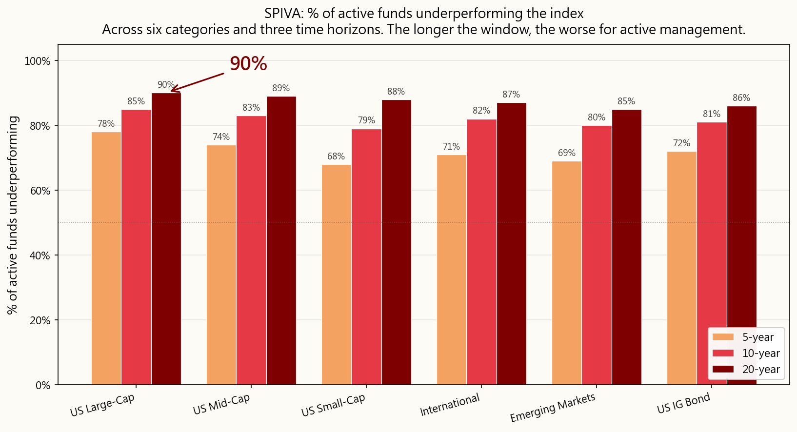
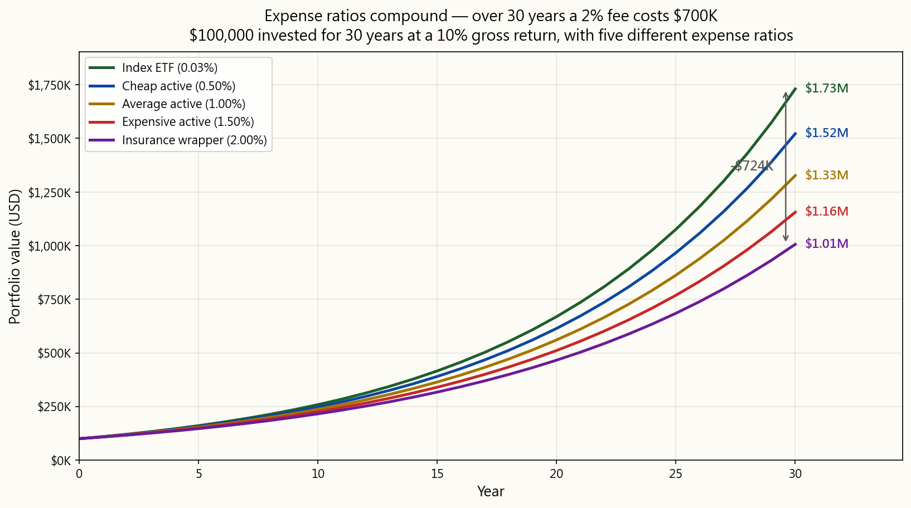
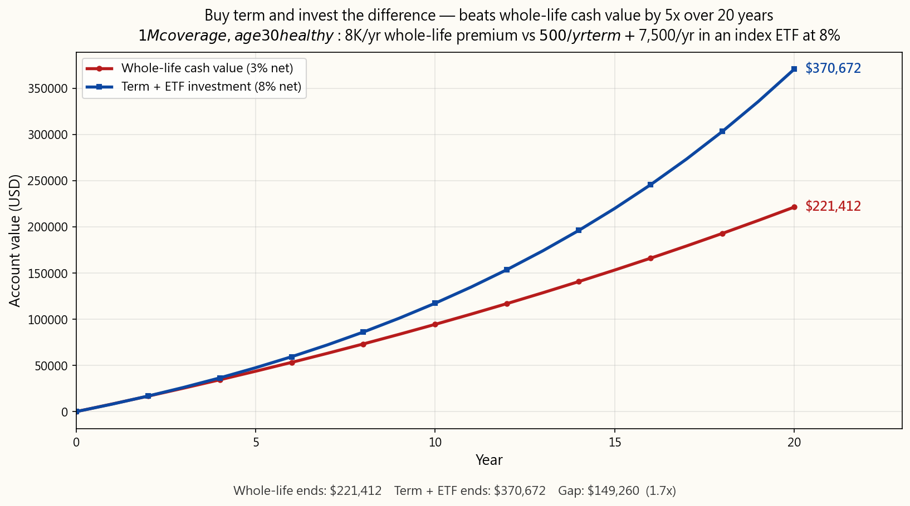
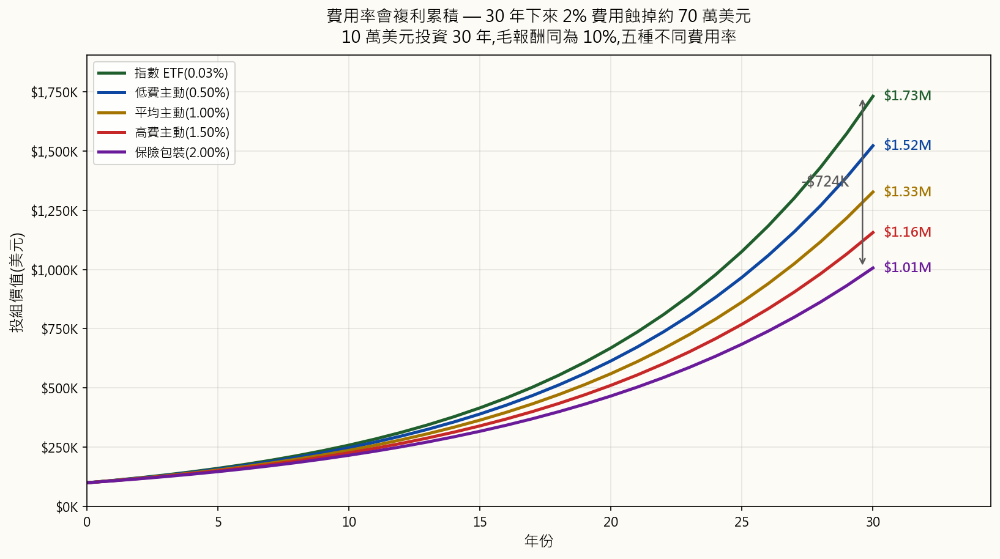
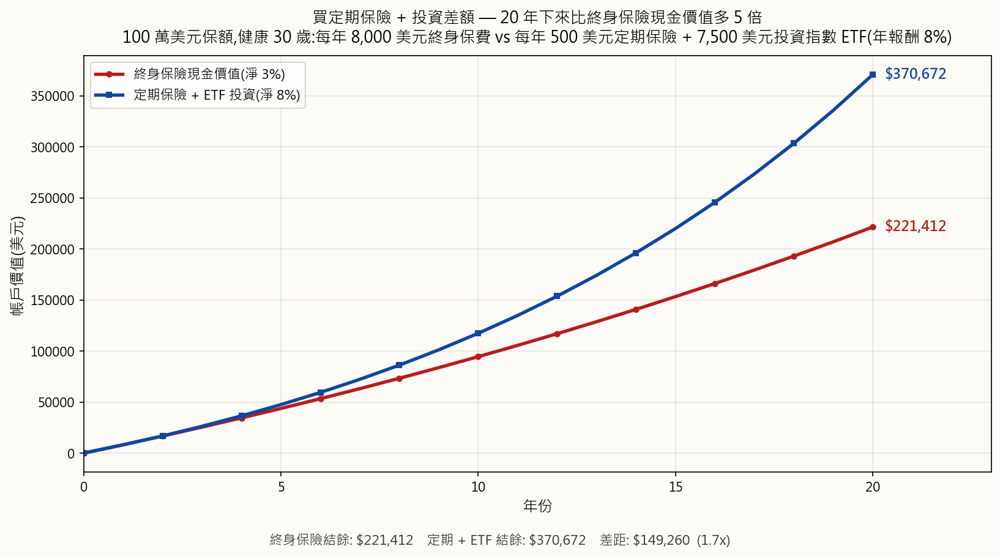
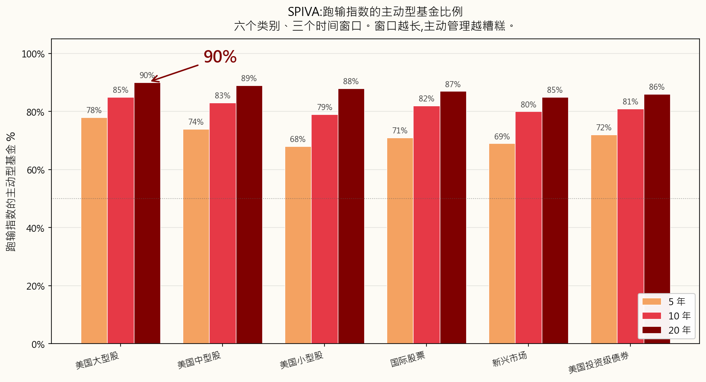
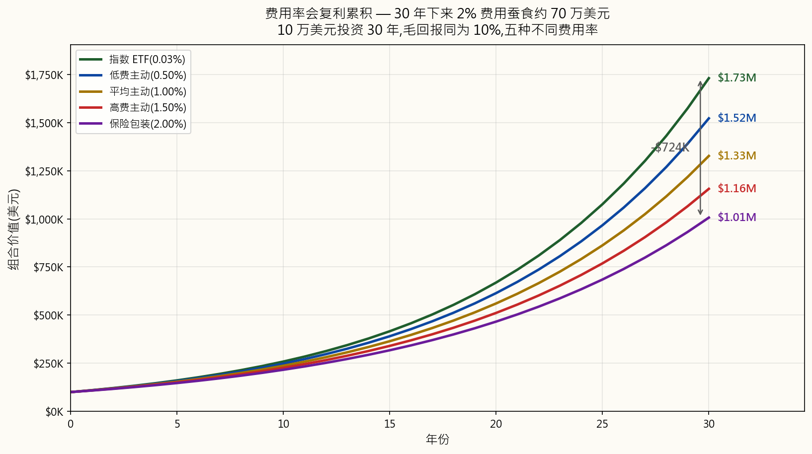

Week 2: Index Funds and ETFs
Animation reference: animation/week02_active_vs_passive.py
1. Why This Is Important
Last week we established the brutal truth: inflation is gravity, and not investing is the most expensive thing you can do. Now the question is how. And here is the answer that took the investment industry forty years to admit: for almost everybody, the right answer is a low-cost index fund or ETF. Not stock-picking. Not your bank's "wealth manager." Not your brother-in-law's hot tip. Not the structured note your insurance agent is desperate to sell you.
This is the most important lesson in the whole course, and it is genuinely simple. If you stop reading after Week 2, set up automatic monthly purchases of a broad-market index ETF, and never read another finance book in your life, you will outperform the vast majority of investors on this planet — including the professionals being paid millions to manage other people's money.
That is not a sales pitch. It is a measured statement of what the data has shown for four decades:
- Roughly 90% of actively managed US large-cap funds underperform the S&P 500 over a 20-year window — published every year by the SPIVA scorecard from S&P Dow Jones Indices.
- The single best predictor of future fund performance is the expense ratio. Not the manager's pedigree, not the brand, not the past returns. The fee. Lower fee → higher future return, on average. (Morningstar has confirmed this in study after study.)
- Warren Buffett — the most famous active investor in history — instructed in his will that his wife's inheritance be invested in "a very low-cost S&P 500 index fund." If the greatest stock-picker alive tells his own widow to skip stock-picking, that is a tell.
And one honest cliffhanger at the end: the index-fund consensus has worked for forty years. It is not guaranteed to work forever. When and how it can break, and what you do about it, is a topic we come back to in much later weeks. For now, we plant the foundation. The advanced moves come later — on top of this foundation, not instead of it.
"Investing is a must. Every other tool in this course is a nice-to-have."
2. What You Need to Know
2.1 What Is an Index?
An index is a list of stocks (or other assets) that follows a set of rules. Nobody "manages" the index — it just is what its rules say it is. The S&P 500 is "the 500 largest US companies that meet certain liquidity, profitability, and listing criteria, weighted by market value." That is the entire definition. A computer can apply it.
When the news says "the market was up 2% today," they almost always mean the S&P 500 was up 2%.
The major indices you will hear about:
| Index | What It Tracks | # Holdings |
|---|---|---|
| S&P 500 | 500 largest US companies | ~500 |
| CRSP US Total Market | Entire US stock market | ~4,000 |
| Dow Jones (DJIA) | 30 large US companies (price-weighted, an antique) | 30 |
| NASDAQ Composite | All stocks on NASDAQ | ~3,000 |
| NASDAQ-100 | 100 largest non-financial NASDAQ stocks (tech-heavy) | 100 |
| Russell 2000 | 2,000 small US companies | ~2,000 |
| MSCI EAFE | Developed markets ex-US/Canada | ~800 |
| MSCI Emerging Markets | Emerging-market countries | ~1,400 |
| FTSE 100 | 100 largest UK companies | 100 |
Most major indices are market-cap weighted. That means a company's weight in the index is proportional to its total market value. Apple at ~$3 trillion gets a ~7% weight in the S&P 500; the smallest constituent at ~$10 billion gets ~0.02%. The top 10 companies routinely make up 30–35% of the entire index. When you "buy the S&P 500," you are buying much more concentrated mega-cap exposure than the name "500 stocks" suggests.
flowchart LR
A[Index = a rulebook] --> B[Computer applies the rule]
B --> C[List of stocks + weights]
C --> D[Index Fund buys exactly that list<br/>in exactly those weights]
D --> E[You buy one share of the fund]
E --> F[You own a tiny slice of every stock<br/>in the index, instantly]
flowchart LR
A[Index = a rulebook] --> B[Computer applies the rule]
B --> C[List of stocks + weights]
C --> D[Index Fund buys exactly that list<br/>in exactly those weights]
D --> E[You buy one share of the fund]
E --> F[You own a tiny slice of every stock<br/>in the index, instantly]
That is the entire mechanism. There is no genius in it. That is precisely why it works.
2.2 Index Funds — Bogle's Heretical Idea
The index fund did not exist until 1976. Before that, every mutual fund in America was actively managed: smart people in suits picking stocks and charging 1–2% per year for the privilege. The math was the same then as now — most of them lost to the market average — but the academic finding had not yet hardened into a product.
The man who turned the math into a product was Jack Bogle. Bogle had been ousted from Wellington Management in 1974. In 1975 he founded a strange new mutual-fund company called Vanguard, structured as a mutual — owned by its own shareholders, with no outside profit motive. In 1976 Vanguard launched the First Index Investment Trust, the first retail index fund: it would simply buy all 500 stocks in the S&P 500 in their index weights and charge an extremely low fee.
The industry mocked it. The press called it "Bogle's Folly." Brokers refused to sell it (no commission to be earned). The fund raised only $11 million in its IPO — a fraction of the $150 million Bogle had targeted. Competitors called the idea "un-American" and "a recipe for guaranteed mediocrity."
The competitors were right that it was guaranteed mediocrity — if mediocrity means "the market average minus a few basis points of fee." They missed the part where the market average minus a few basis points beats roughly 90% of the professionals over 20 years.
Today Vanguard manages over $8 trillion and the index-fund-and-ETF category collectively manages over $20 trillion worldwide. Bogle's "folly" became the dominant form of retail equity investing on the planet. The man himself died in 2019, and he never enriched himself the way every other founder of an $8T asset manager would have — Vanguard's mutual structure meant the savings flowed back to fundholders, not to him personally. He is one of the very few people in finance who deserves the word hero without quotation marks.
"Don't look for the needle in the haystack. Just buy the haystack." — John C. Bogle
2.3 Mutual Funds vs. ETFs — Why Mutual Funds Still Exist (and Why You Should Mostly Use ETFs)
An index fund is a strategy — "track the index." That strategy can be packaged in two different wrappers:
- A mutual fund, which prices and trades once per day at the closing NAV.
- An ETF (Exchange-Traded Fund), which trades on an exchange in real time, like a stock.
| Feature | Mutual Fund | ETF |
|---|---|---|
| When it trades | Once a day at end-of-day NAV | All day, like a stock |
| Minimum investment | Often $1,000–$3,000 | Price of one share (or fractional) |
| Tax efficiency (taxable accounts) | Worse — capital-gains distributions forced on all holders | Better — in-kind redemption mechanism shields holders |
| Commissions | $0 at the fund's own brokerage | $0 at most brokers |
| Easy auto-invest | Yes (dollar amount, any day) | Sometimes harder (need whole shares unless fractional supported) |
ETFs win on almost every dimension that matters in 2026 — lower minimums, real-time pricing, dramatically better tax efficiency, lower expense ratios on average. The only categories where a mutual fund still has a real edge are:
That is basically the list. In a regular taxable brokerage account in 2026, an ETF version of the same index will beat the mutual-fund version on cost and on after-tax return for almost every retail investor. Default to the ETF. If your only access is through a 401(k), the mutual fund is fine — pick the cheapest broad-market index option in the menu and move on.
The reason mutual funds still exist in such enormous quantities is not because they are better. It is because trillions of dollars of legacy money is sitting in 401(k)s, IRAs, and old brokerage statements where switching out of the mutual fund would crystallise a taxable gain. Inertia, not merit. The new dollar should almost always go into an ETF.
2.4 Active vs. Passive — The 90% Statistic
Active investing means a fund manager (or you) tries to pick winning stocks and avoid losing ones. Research, analysis, frequent trading, conviction calls. That is what every actively managed mutual fund and hedge fund does, and it is what they charge you for.
Passive investing means buying the whole index and accepting the average. No prediction, no conviction call, no charisma.
The orthodox question is "can the active manager beat the index?" The orthodox answer, repeated annually for more than two decades by the SPIVA scorecard from S&P Dow Jones Indices, is mostly no. The longer the time horizon, the worse it gets:
| Category (US) | 5-year underperform | 10-year underperform | 20-year underperform |
|---|---|---|---|
| US Large-Cap | 78% | 85% | 90% |
| US Mid-Cap | 74% | 83% | 89% |
| US Small-Cap | 68% | 79% | 88% |
| International | 71% | 82% | 87% |
| Emerging Markets | 69% | 80% | 85% |
| US Investment-Grade Bond | 72% | 81% | 86% |
(Approximate figures from recent SPIVA reports; the exact numbers wobble year to year, the qualitative pattern does not.)
Translation: of every 100 US large-cap fund managers, 90 lose to a computer running a simple list of 500 names over a 20-year window.
And here is the killer follow-up: the 10 who won are not the same 10 next decade. S&P's persistence studies repeatedly show that funds in the top quartile over five years drop out of the top quartile over the next five years more often than not. Past outperformance does not predict future outperformance — that warning at the bottom of every fund prospectus is true, and most investors ignore it.
There are five reasons active managers, in aggregate, can't beat the index:

2.5 Expense Ratios — The Single Biggest Lever You Control
The expense ratio is the annual fee a fund charges, deducted automatically from the fund's assets every day. You never see the bill. It just shows up as a slightly lower return.
That invisibility is the entire point of why it works as a wealth-extraction mechanism. A 1% fee sounds like nothing. Over thirty years it eats roughly 25–30% of your terminal wealth. Compounding cuts both ways: it grows your money and it grows the fee.
$100,000 invested for 30 years at a 10% gross return:
| Fund Type | Expense Ratio | Net Return | Value at Year 30 | Lost to fees vs. index |
|---|---|---|---|---|
| Index ETF (e.g. VOO) | 0.03% | 9.97% | $1,721,686 | — |
| Cheap Active | 0.50% | 9.50% | $1,526,688 | −$194,998 |
| Average Active | 1.00% | 9.00% | $1,326,768 | −$394,918 |
| Expensive Active | 1.50% | 8.50% | $1,152,309 | −$569,377 |
| Insurance-product wrapper | 2.00% | 8.00% | $1,006,266 | −$715,420 |

Read the bottom row again. A 2% wrapper costs you over $700,000 on a $100,000 investment. That is not a fee. That is a house. Possibly two houses, depending on the city. It goes from your retirement to the fund company's payroll, marketing budget, office lease, and CEO compensation.
The fee compounds through every market environment. In the year the market drops 30%, you still pay it. In the year the manager beats the index by 0.4%, you still owe it 1.0%. The fee is the only number on a fund prospectus that is guaranteed.
Two more facts that the industry would prefer you not internalise:
- Within any fund category, lower-fee funds beat higher-fee funds on average. This is the most replicated finding in fund research — Morningstar has shown it across asset classes and across decades. The cheapest fund in a category is, on average, the best fund in the category.
- A fee is a guaranteed drag. A manager's outperformance is a hoped-for offset. Trading certainty for hope is, in every other domain, recognised as a bad deal.
2.6 The Financial Advisor Trap
If active funds are this bad, why does every bank, brokerage, and "wealth management" branch keep selling them? Because the financial advisor's compensation is structured to make selling them rational for the advisor, even when it is irrational for you.
There are three compensation models you will encounter:
flowchart TD
A[Financial Advisor] --> B{How are they paid?}
B --> C["<b>Commission-based</b><br/>Paid by fund companies<br/>per product sold<br/><br/><b>Conflict: HIGH</b><br/>Bigger fee → bigger commission<br/>→ they steer you to it"]
B --> D["<b>Fee-based</b><br/>Mix of fees from you<br/>+ commissions from funds<br/><br/><b>Conflict: MODERATE</b><br/>Some incentive remains"]
B --> E["<b>Fee-only Fiduciary</b><br/>Flat fee or % of assets<br/>only from you, never from funds<br/><br/><b>Conflict: LOW</b><br/>Same pay regardless of what they pick"]
style C fill:#7a1c1c,color:#fff
style D fill:#a37500,color:#fff
style E fill:#1f5e2d,color:#fff
flowchart TD
A[Financial Advisor] --> B{How are they paid?}
B --> C["<b>Commission-based</b><br/>Paid by fund companies<br/>per product sold<br/><br/><b>Conflict: HIGH</b><br/>Bigger fee → bigger commission<br/>→ they steer you to it"]
B --> D["<b>Fee-based</b><br/>Mix of fees from you<br/>+ commissions from funds<br/><br/><b>Conflict: MODERATE</b><br/>Some incentive remains"]
B --> E["<b>Fee-only Fiduciary</b><br/>Flat fee or % of assets<br/>only from you, never from funds<br/><br/><b>Conflict: LOW</b><br/>Same pay regardless of what they pick"]
style C fill:#7a1c1c,color:#fff
style D fill:#a37500,color:#fff
style E fill:#1f5e2d,color:#fff
The single most important question to ask any advisor: "Are you a fiduciary, and are you fee-only?" A fiduciary is legally required to act in your best interest. A non-fiduciary salesperson is required only to recommend something "suitable" — a much lower bar that has historically allowed the sale of high-fee garbage to anyone old enough to sign.
The reason your bank's "private wealth manager" is so eager to put you into a 1.5% expense ratio active fund with a 5% front-load is that the bank gets paid both ways: it earns the load up front and a slice of the ongoing 12b-1 marketing fee for as long as you hold it. You are not their client; you are their product. The fund company is paying them to deliver you.
The cleanest response to a non-fiduciary advisor pushing an active fund is: "Show me, in writing, the all-in cost — expense ratio, sales loads, 12b-1 fees, advisory fee, account fees — for me to hold this fund for ten years. And show me your firm's compensation from that fund family." If they refuse or stall, you have your answer.
Default rule: if you don't already have several million dollars and a genuinely complex tax situation, you almost certainly do not need a financial advisor. You need an ETF and an automatic monthly transfer.
2.7 Insurance "Investments" Are Almost All Scams
I want to be unusually direct here. Variable universal life, indexed universal life, whole life sold as an "investment," equity-linked savings products, structured annuities marketed to retail savers — these are, with very rare exception, predatory products designed to extract fees from people who do not realise they are being charged.
The pitch is always some combination of:
- "Tax-advantaged growth."
- "Principal protection."
- "Stock-market upside without the downside."
- "Forced savings discipline."
- 5–10% surrender charges if you exit in the first 5–10 years.
- 2–4% all-in annual fees wrapped in opaque language ("mortality and expense charge," "rider fee," "administrative charge," "fund management fee," all stacking on top of each other).
- A return profile that, after fees, lags a basic ETF by enormous margins — often delivering 2–4% net when the underlying market gave 8–10%.
- Commissions to the agent that can equal 80–100% of your first year's premium, which is precisely why they are pushed so hard.
Insurance is for risk transfer. Investing is for wealth creation. Never mix them.
If you have dependents who would be financially harmed by your death, buy term life insurance — pure, cheap, fixed-period coverage with no investment component. A healthy 30-year-old can buy a 20-year, $1 million term policy for roughly $25–35 per month. Then take the difference between the term policy and what an agent would have charged you for whole life, and put that difference into an index ETF. This is the textbook strategy: "buy term and invest the difference." Over any 20-year window, this beats a whole-life policy on after-cost net worth by orders of magnitude — and you keep full control of and full liquidity in the investment side.

The agent will tell you whole life "forces you to save." So does an automatic monthly transfer to your brokerage account, and that one doesn't pay them an 80% commission.
2.8 The Honest Counter-Examples — Active Funds That Actually Worked
I have spent the last several sections beating up on active management. To stay intellectually honest, I have to say plainly: a small number of active managers have beaten the index, decisively and over decades. Not many — but enough to matter.
The notable ones:
- Berkshire Hathaway under Warren Buffett and Charlie Munger. From 1965 through the early 2020s, Berkshire compounded book value at roughly 20% per year versus the S&P 500's ~10% — the most impressive long-run track record in modern finance. Buffett is the textbook proof that some active management works. He is also the same Buffett who told his widow to put her inheritance in an S&P 500 index fund. He is the exception telling you that you are not the exception.
- Peter Lynch / Fidelity Magellan, 1977–1990. Lynch ran Magellan for 13 years and delivered roughly 29% per year, beating the S&P 500 in 11 of those 13 years — arguably the greatest mutual-fund track record on record. He retired at 46. Magellan after Lynch went back to roughly tracking the index.
- Renaissance Technologies' Medallion Fund, ~1988 onward. A high-frequency, high-math, employee-only quant fund that has reportedly delivered ~40% per year after its 5-and-44 fee structure for over three decades. The Medallion Fund is closed to outside investors and has been since 1993, and Renaissance's outside-investor funds (RIEF, RIDA) have done dramatically less well — sometimes losing money when Medallion was up 70%. Medallion is the existence proof of real, durable alpha. It is also the proof that real alpha gets walled off and never reaches you.
- Seth Klarman's Baupost Group. Decades of equity-like returns with structurally less volatility than the market, by sticking to a deep-value framework and holding extraordinarily large cash balances when nothing met the criteria. Klarman's book Margin of Safety sells used for $1,000+ because he refuses to reprint it.
- Joel Greenblatt at Gotham Capital, 1985–1994. ~50% per year for ten years on a small special-situations book before returning outside capital. Greenblatt subsequently published the playbook in You Can Be a Stock Market Genius and The Little Book That Beats the Market — explicitly betting that the strategy was too small-cap, too uncomfortable, and too patient for most readers to actually run.
The lesson is not "active never works." The lesson is the active strategies that genuinely work are rarely the ones you can buy from your bank's product menu. And the active funds you can buy from your bank's product menu are, in aggregate, the 90% the SPIVA scorecard tracks losing to the index.
If you have the time, the temperament, and a real durable edge in a specific corner of the market, by all means concentrate there. Most readers don't. Most readers should index the bulk and spend their time elsewhere.
2.9 The Funds You Actually Need
You do not need to memorise the thousands of ETFs that exist. You need this short list:
| Ticker | Fund | Expense Ratio | What It Tracks |
|---|---|---|---|
| VOO | Vanguard S&P 500 ETF | 0.03% | 500 largest US companies |
| VTI | Vanguard Total US Stock Market | 0.03% | Entire US market (~4,000 stocks) |
| IVV | iShares Core S&P 500 | 0.03% | S&P 500 (BlackRock equivalent of VOO) |
| SPY | SPDR S&P 500 | 0.09% | S&P 500 (older, expensive, traders' favourite) |
| VXUS | Vanguard Total International | 0.07% | All non-US developed + emerging |
| VT | Vanguard Total World Stock | 0.07% | Entire world (US + ex-US in one ETF) |
| BND | Vanguard Total US Bond | 0.03% | US investment-grade bonds |
| QQQ | Invesco NASDAQ-100 | 0.20% | 100 largest non-financial NASDAQ (tech-heavy) |
VOO vs. VTI vs. SPY is the single most-asked question. The short version:
- VOO and IVV track the same index (S&P 500) at the same cost (0.03%). Either is fine.
- SPY also tracks the S&P 500 but charges 3× the fee (0.09%). It exists because it was the first US ETF (1993), so it has the deepest liquidity — institutional traders care about that, long-term investors do not. Don't pay 3× the fee for liquidity you don't need.
- VTI owns the entire US market (~4,000 names) instead of just the 500 largest. In practice, VOO and VTI return almost identically because the S&P 500 is roughly 80% of US market cap. If you want one fund and slightly more diversification, pick VTI. If you want one fund and the cleanest index everyone references, pick VOO. There is no wrong answer between these two.
flowchart TD
A[VTI: Total US Market<br/>~4,000 stocks]
A --> B[VOO / IVV / SPY: S&P 500<br/>~500 stocks<br/>= ~80% of VTI by value]
A --> C[+ ~3,500 mid- and small-cap stocks<br/>= ~20% of VTI by value]
flowchart TD
A[VTI: Total US Market<br/>~4,000 stocks]
A --> B[VOO / IVV / SPY: S&P 500<br/>~500 stocks<br/>= ~80% of VTI by value]
A --> C[+ ~3,500 mid- and small-cap stocks<br/>= ~20% of VTI by value]
2.10 How to Actually Buy One
This is the entire procedure, and it takes 15 minutes:
That's it. Five steps. Fifteen minutes. You now own a slice of the 500 largest companies in America. No CNBC. No watching your portfolio. No stock-picking anxiety.
The most important thing you can do after pressing buy is close the app and stop looking. The market goes up and down constantly. Watching the daily moves is the single biggest cause of bad investor behaviour — selling in panic, buying in euphoria. Every dollar of long-term return in the SPIVA-beating index ETF strategy comes from holding through the noise, not trading around it.
2.11 The Three-Fund Portfolio
For most readers, a three-fund portfolio in the style Bogle popularised is genuinely the entire portfolio:
| Fund | Ticker | Suggested allocation (age 30) |
|---|---|---|
| Total US stock market | VTI | 60% |
| Total international stock | VXUS | 25% |
| Total US bond market | BND | 15% |
pie showData
title "Three-Fund Portfolio (age 30 example)"
"VTI - US Stocks" : 60
"VXUS - International Stocks" : 25
"BND - US Bonds" : 15
pie showData
title "Three-Fund Portfolio (age 30 example)"
"VTI - US Stocks" : 60
"VXUS - International Stocks" : 25
"BND - US Bonds" : 15
The rough traditional rule of thumb on the bond slice: bond % ≈ your age − 20, more or less. A 30-year-old runs ~10–15% bonds. A 65-year-old runs ~45–55% bonds. The textbook logic is that bonds are ballast: they zig when stocks zag, they reduce portfolio volatility, and they protect you from a 50% equity drawdown in the years close to retirement when you can't wait a decade for it to recover.
A heads-up that I owe you upfront, even in the foundation lesson: that traditional logic was built for a world that no longer exists. The "bonds as ballast" framework assumes (a) bonds pay a real yield above inflation, and (b) bonds rally when stocks fall. Both of those broke in the 2020s. With governments running enormous deficits financed by money printing (Week 1, §2.2), and with central banks suppressing real yields below inflation as a matter of policy ("financial repression"), holding a long-bond fund through an inflationary cycle is not ballast — it is a slow loss of purchasing power. And in 2022, stocks and bonds both fell roughly 20% together, which is exactly the scenario the 60/40-with-bonds shape is supposed to protect you from. So treat the bond slice in the table above as the textbook starting point that the rest of the course will challenge. We come back to what actually plays the ballast role in a money-printing world later: - Week 5 (Bonds) dissects what bonds actually are, why the historical hedge worked when it worked, and the conditions under which it stops working. - Week 6 (Gold and Commodities) introduces the alternative inflation-hedge — gold has been the store of value across every monetary regime humans have ever run, and the 2020s case for it is much stronger than for long-duration bonds. - Week 47 (Tail Risk Hedging) and Level 5 generally rebuild the safety side of the portfolio properly, using a mix of cash/short-duration Treasuries, gold, and long-volatility option structures rather than the traditional long-duration bond bucket. For the foundation portfolio you build today, the three-fund template is fine and is dramatically better than not investing. Just understand that the bond slice is the part of this portfolio with the shortest shelf life, and we will be coming back to replace it.
Total blended expense ratio for this entire portfolio: roughly 0.04% per year. That is four dollars per year on $10,000. For a globally diversified portfolio touching every major asset class.
2.12 Until It Stops Working — A Cliffhanger
I have spent this whole chapter telling you that index ETFs are the answer. I want to close with the qualifier that makes me an honest teacher rather than a salesman.
The buy-and-hold passive index strategy has worked extraordinarily well for the last 40 years — since roughly the early 1980s. It worked because of a specific combination of conditions: a working-age population larger than the retired population mechanically buying every payroll cycle, falling interest rates, dollar reserve status, globalisation, and (since 2008) a Federal Reserve that consistently steps in when financial conditions tighten too far.
None of those tailwinds is guaranteed to keep blowing.
When the demographic flip arrives — when the boomer generation moves from net buyers (accumulation) to net sellers (decumulation) — the same mechanical pipe that has bid the index up for 40 years can run in reverse. Passive funds are not autonomous; they react to whether their end-investor is contributing or withdrawing. A market dominated by price-insensitive flow on the way up is a market vulnerable to price-insensitive flow on the way down.
This is not a prediction that the index will stop working tomorrow. It is an honest acknowledgement that "it has worked for 40 years" is not the same as "it will work forever."
For you, today, building your first portfolio: the index ETF is the right answer. Build the foundation. Get the automatic monthly transfer running. Let it compound for the next several years while you go through the rest of the course.
The detailed treatment of when and how the index can stop working — and what you migrate toward when it does — is what we build over the rest of this course:
- Week 23 (Factor Investing) introduces the first set of alternatives to plain market-cap-weighted indexing — value, momentum, quality, low-volatility tilts that have historically captured returns the cap-weighted index leaves on the table.
- Week 43 (Active Portfolio Management) is the deeper dive into when active management does earn its fee, and when it doesn't.
- Level 5 (Weeks 47–52) is where we actually build the "barbell" portfolio shape — high-conviction safety on one end, asymmetric speculation on the other, with the broad market-cap-weighted core deliberately removed. That is the advanced shape, and it is built on top of everything we cover in Weeks 2–46.
But understand that "buy and hold the index" is a regime-conditional strategy that has worked for a specific 40-year window. We will come back to what happens after that window closes. For now, the foundation is enough.
3. Common Misconceptions
Misconception 1: "Index funds are just for beginners."
Index funds and ETFs are used by sovereign wealth funds, university endowments, pension funds, and billionaires. CalPERS — one of the largest pension funds on the planet — runs huge index-fund mandates. Warren Buffett, the most famous active investor in history, won a $1M public bet in 2008–2017 that an S&P 500 index fund would beat a hand-picked basket of hedge funds, and won decisively. Indexing is not the beginner option; it is the rationally-chosen option that happens to also be the easiest.
Misconception 2: "You get what you pay for — higher fees mean better management."
In almost every other consumer category, this is true. In investing, the relationship is reversed. Morningstar has shown across asset classes and decades that expense ratio is the single best predictor of future fund performance — better than past returns, better than star ratings, better than manager tenure. Higher fee → lower expected future return. The cheap fund is, on average, the better fund.
Misconception 3: "But my financial advisor recommended an active fund."
Many financial advisors are paid commissions for selling specific funds — sometimes openly, often in opaque revenue-sharing arrangements you will never see on a statement. Their incentive is to recommend the product that pays them the most, not the product that compounds you the most. Always ask: "Are you a fee-only fiduciary, and what is your full compensation from anything you recommend?" If they aren't, or if they can't or won't answer in writing, walk away.
Misconception 4: "Index funds can't protect you in a downturn."
Correct — they can't. They are also not supposed to. The index drops when the market drops. The relevant comparison is not "index vs. cash" but "index vs. active fund." In 2008 the S&P 500 fell ~37%; the average actively managed US stock fund fell ~39%. Active managers did not protect you in the crash; they made it slightly worse, on average. The protection in a downturn comes from your asset allocation (how much stock vs. bond vs. cash) and your behaviour (don't panic-sell), not from your fund choice.
Misconception 5: "I should pick the fund with the best 5-year track record."
This is the single most common and most expensive mistake retail investors make. Top-performing funds revert to the mean. S&P's persistence studies, repeated decade after decade, show that fewer than 1 in 10 top-quartile funds remain top-quartile five years later. Past performance does not predict future performance; that warning at the bottom of every fund prospectus is not legal boilerplate, it is a true statement that everyone ignores. Chasing past winners is, in expectation, worse than picking randomly.
Misconception 6: "SPY and VOO track the same thing, so it doesn't matter which I buy."
They track the same index. They do not have the same fee. SPY charges 0.09%; VOO charges 0.03%. On a $500,000 portfolio held for 30 years, that 0.06% gap compounds to roughly $25,000+ of foregone wealth. SPY's only structural advantage is its trading liquidity, which matters only if you are an institution moving size or a day trader — not a buy-and-hold investor. For long-term holders, VOO or IVV beats SPY on cost. Always.
Misconception 7: "I need to diversify across many different index funds."
A single total-market fund like VTI already holds about 4,000 stocks. Adding VXUS gives you another ~7,000 international stocks. Two ETFs is roughly 11,000 stocks across every major economy on earth — there is nothing left to diversify into at the equity level. Owning 10+ index ETFs typically just creates overlap (the same Apple, Microsoft, and Nvidia showing up in multiple funds at different weights) and a false sense of diversification. Two or three funds is enough. More than five is usually a sign of confusion, not sophistication.
Misconception 8: "Index funds are dangerous because you can't avoid the bad companies."
An index fund does hold companies that go bankrupt. When Enron collapsed in 2001, it was about 0.7% of the S&P 500 — painful in the abstract, irrelevant to a portfolio. The other 499 companies kept compounding. Diversification within the index — hundreds or thousands of names, none meaningfully large enough alone to wreck you — is the protection. A concentrated stock-picker who happened to be heavy in Enron lost everything in that name. The index investor lost 0.7%.
Misconception 9: "Whole life insurance is a good investment because it builds cash value tax-free."
It is not, and the cash value pitch is precisely how the product is sold. Real returns on whole-life cash value, after the agent's commission, the surrender charge schedule, and the layered annual fees, typically come out to 2–4% net versus the 7–10% you would have made in an index ETF over the same window. Buy term life insurance for the actual death-benefit need, and put the difference between the term premium and what the whole-life policy would have cost into an index ETF. This is the textbook "buy term and invest the difference" strategy. It wins the comparison in essentially every realistic scenario; the agent's commission is exactly why they will never recommend it.
4. Q&A
Q1: What exactly is an ETF, and how is it different from a stock?
An ETF (Exchange-Traded Fund) is a basket of securities packaged into a single instrument that trades on an exchange just like a stock. Buying one share of VOO buys you a tiny proportional slice of all 500 companies in the S&P 500. A stock represents one company; an ETF represents a defined basket. Same trading mechanics — ticker symbol, real-time price, buy and sell during market hours — but you get instant diversification.
Q2: VOO, VTI, or SPY — which one?
For long-term buy-and-hold: VOO or VTI, both at 0.03%. VOO = the S&P 500 (~500 names); VTI = the entire US market (~4,000 names). They perform almost identically because the S&P 500 is ~80% of the US market by value. Either is fine. SPY is for traders, not investors — same exposure as VOO at 3× the fee.
Q3: How much of my portfolio should be in index ETFs?
For most readers building their first portfolio in their 20s–40s: 80–100% of the equity sleeve in broad-market index ETFs. The exact split between stocks and "safe assets" depends on age and risk tolerance:
| Age | Stock % | Safe-asset % |
|---|---|---|
| 20–35 | 80–90% | 10–20% |
| 35–50 | 70–80% | 20–30% |
| 50–65 | 50–70% | 30–50% |
| Retirement | 30–50% | 50–70% |
Note on "safe asset" instead of "bond": the textbook ballast for the stock sleeve has historically been the bond allocation, on the assumption that bonds zig when stocks zag. As flagged in §2.11, that assumption broke in the 2020s — stocks and bonds fell together in 2022, and bonds no longer pay a real yield above inflation under financial repression. The "safe-asset" sleeve should therefore be read as a basket of assets uncorrelated (or negatively correlated) with the stock market, not just bonds. The traditional bond allocation is one component, but the modern sleeve also includes short-duration Treasuries and cash equivalents, gold and other monetary metals (Week 6), and — at the more advanced end — long-volatility option structures and tail-hedge overlays (Week 47, Level 5). For your first portfolio today, a broad bond ETF like BND is a reasonable starting point; the rest of the course is how you replace and supplement it as you progress.
Within the stock allocation, a typical split is ~70% US (VTI) and ~30% international (VXUS).
Q4: Expense ratio vs. sales load — what's the difference?
The expense ratio is the annual fee, deducted from fund assets daily. 0.03% on $10K = $3/year. The sales load is a one-time commission charged when you buy (front-load) or sell (back-load). A 5% front-load on a $10,000 buy means $500 vanishes immediately and only $9,500 actually gets invested. Modern index ETFs have zero sales loads. Any fund you are looking at that does charge a load is, almost without exception, not worth buying.
Q5: If 90% of active managers lose, why do active funds even still exist?
Because they are enormously profitable for the fund company. A $10B fund at a 1% expense ratio earns $100M per year in fees, regardless of performance. The investor losing to the index is a bad deal for the investor, but a fantastic recurring-revenue business for the fund company. Add in the marketing budget that buys CNBC airtime, the bank branch network that distributes them, the financial advisors paid to sell them, and investor psychology that wants to believe the manager with the silver tongue can beat the average — the active fund industry persists because it pays everyone in the value chain except you.
Q6: Can an index fund go to zero?
Theoretically only if every single company in the index simultaneously went bankrupt — which would mean the entire US economy had collapsed, in which case the value of any financial asset is academic. In practice, the worst broad-index drawdowns in history (1929–32, 2007–09, 2020 COVID flash crash) bottomed at 50–80% peak-to-trough and recovered to new all-time highs within a decade. An individual stock can absolutely go to zero, and many have. A broad index practically cannot. That asymmetry is the entire reason diversification works.
Q7: International index funds — should I own those too?
Most reasonable allocations include some international exposure. The US is roughly 60% of the global stock market by capitalisation; the other 40% sits in Europe, Japan, emerging markets, and elsewhere. International diversification can reduce portfolio volatility because regional markets do not move in perfect sync. VXUS (Vanguard Total International Stock) at 0.07% covers ~7,000 stocks across developed and emerging markets in one ETF. A common rough split is 70% US (VTI), 30% international (VXUS).
Q8: What is dollar-cost averaging, and should I do it with index ETFs?
Dollar-cost averaging (DCA) = investing a fixed dollar amount at regular intervals regardless of price. $500 every month, every month, no matter what the market is doing. When prices are low, $500 buys more shares. When prices are high, $500 buys fewer. The result is an average cost slightly below the simple average market price over the period, plus the much more important behavioural benefit: you keep investing through the scary months instead of waiting for "the right time" that never feels right. For anyone investing out of paycheck income, DCA happens automatically. For anyone with a lump sum, the academic literature is mixed — historically, lump-summing has slightly outperformed DCA on average (because markets go up most of the time), but DCA is psychologically much easier to live with.
Q9: Do index funds pay dividends?
Yes. The companies inside the index pay dividends to the fund, the fund collects them, and the fund passes them through to shareholders quarterly. VOO's current dividend yield is roughly 1.3–1.5%. Most brokers let you turn on DRIP (Dividend Reinvestment Plan), which automatically uses each dividend to buy more shares of the same fund. Over decades, reinvested dividends are responsible for a substantial fraction of total equity returns — leave DRIP on by default.
Q10: I've heard about "smart beta" or "factor" ETFs — are those the same as index funds?
Not quite. Traditional index funds use market-cap weighting (bigger company = bigger index weight). Smart-beta or factor ETFs are still rules-based and rebalanced systematically — so they're index-like — but they weight by some factor other than market cap: value (cheap fundamentals), momentum (recent winners), quality (clean balance sheets), low volatility (boring stocks), small size, and so on. Expense ratios are higher than plain index funds (typically 0.10–0.40%) because the rebalancing rules are more involved, but they are still dramatically cheaper than active funds. Factor investing is a meaningful topic, and we cover it in depth in Week 23. For your first portfolio, though, plain market-cap-weighted index ETFs are the right starting point.
Q11: Should I buy individual stocks alongside my index ETFs?
If you genuinely have a durable edge in a specific company or sector — domain expertise from your day job, a structural insight about an industry you live in — then a small "satellite" sleeve of individual names alongside an index core can make sense. A common shape is 80–90% in broad-market index ETFs, 10–20% in individual conviction names. What you should not do is buy individual stocks because you saw a stock-tip on social media, because the brand is familiar, or because it just had a good month. The 90% SPIVA statistic applies to retail stock-pickers far more brutally than it applies to professional fund managers — most retail individual-stock portfolios materially underperform the index they could have just bought. If you can't articulate, in one sentence, exactly why a stock is mispriced relative to its fundamentals, you don't have an edge — you have an opinion. There is nothing wrong with opinions; just don't size them as if they were edges.
Q12: I keep hearing that the index is "concentrated in mega-cap tech" — is this a problem?
It is a real observation. In 2026 the top 10 holdings of the S&P 500 (mostly the mega-cap tech names — Apple, Microsoft, Nvidia, Alphabet, Amazon, Meta, etc.) account for roughly 30–35% of the entire index by weight. Buying VOO is much more concentrated mega-cap-tech exposure than the name "500 stocks" implies. Whether this is a problem depends on your view of those companies. The broader-market VTI is somewhat less concentrated (because it dilutes the top 10 across ~4,000 names), and an explicit equal-weight S&P 500 ETF (RSP, expense ratio ~0.20%) takes the other extreme — same 500 names, equal weights. For now, a cap-weighted index is still the simplest and historically best-performing default. This concentration question, and what it implies about risk, is exactly the kind of regime-aware thinking we develop further in Weeks 23 and beyond.
第二週：指數基金與交易所買賣基金
動畫參考：animation/week02_active_vs_passive.py
1. 為何這至關重要
上週我們確立了一個殘酷的事實：通脹是地心引力，不投資才是你能做的最昂貴之事。 現在的問題是如何投資。而這個答案，投資界花了四十年才肯承認：對幾乎所有人而言，正確答案是低成本指數基金或交易所買賣基金。 不是選股。不是你銀行的「財富管理顧問」。不是你姐夫的「必勝貼士」。也不是你保險代理人迫不及待要賣給你的結構性產品。
這是整個課程最重要的一課，而且它確實簡單。如果你在第二週看完就停下來，設定每月自動購買一隻覆蓋廣泛市場的指數交易所買賣基金，此後不再讀任何一本財務書籍，你的表現仍將超越這個星球上絕大多數投資者——包括那些拿著數百萬薪酬管理他人資金的專業人士。
這不是推銷辭令。這是四十年來數據所呈現的結論：
- 美國大型股主動管理基金中，大約九成在二十年內跑輸標普500指數——每年由標普道瓊斯指數發布的SPIVA記分卡均有記錄。
- 預測基金未來表現的最佳單一指標是開支比率。 不是基金經理的學歷背景，不是品牌，不是過往回報。是費用。費用愈低→平均而言未來回報愈高。（晨星已在一項又一項研究中反覆確認這一點。）
- 華倫·巴菲特——史上最著名的主動投資者——在遺囑中指示，他妻子的遺產應投入「一隻極低成本的標普500指數基金」。 如果這位有史以來最偉大的選股者告訴自己的遺孀放棄選股，這本身就說明了一切。
最後還有一個誠實的伏筆：指數基金的共識已運作了四十年。但這並不保證它永遠有效。 它在何時、以何種方式可能失效，以及你該如何應對，是我們在後面許多週才會回頭探討的話題。現在，我們先打好地基。進階的操作日後才來——是建立在這個地基之上，而非取而代之。
「投資是必須。這門課裡的其他一切工具，都是錦上添花。」
2. 你需要了解的內容
2.1 什麼是指數？
指數是一份按照一套規則篩選股票（或其他資產）的清單。沒有人「管理」這個指數——它就是其規則所定義的那個樣子。標普500是「符合特定流動性、盈利能力及上市標準的500家最大型美國公司，按市值加權」。這就是完整的定義。一台電腦就能執行它。
當新聞說「今天市場上升了2%」，他們幾乎總是指標普500上升了2%。
你將會聽到的主要指數：
| 指數 | 追蹤對象 | 持倉數目 |
|---|---|---|
| 標普500 | 500家最大型美國公司 | 約500 |
| CRSP美國全市場 | 整個美國股票市場 | 約4,000 |
| 道瓊斯工業平均指數 | 30家大型美國公司（按價格加權，屬舊式設計） | 30 |
| 納斯達克綜合指數 | 納斯達克上市全部股票 | 約3,000 |
| 納斯達克100指數 | 100家最大型非金融類納斯達克股票（科技股為主） | 100 |
| 羅素2000指數 | 2,000家美國小型公司 | 約2,000 |
| MSCI歐澳遠東指數 | 美國及加拿大以外的已發展市場 | 約800 |
| MSCI新興市場指數 | 新興市場國家 | 約1,400 |
| 富時100指數 | 100家最大型英國公司 | 100 |
大多數主要指數均按市值加權。 這意味著一家公司在指數中的權重，與其總市值成正比。市值約三兆美元的蘋果公司，在標普500中佔約7%的權重；而市值約100億美元的最小成分股，則只佔約0.02%。排名前十的公司，佔整個指數的30至35%左右。 當你「買入標普500」時，你買到的大型股集中度，遠遠高於「500隻股票」這個名稱所暗示的程度。
flowchart LR
A[指數 = 一本規則手冊] --> B[電腦執行規則]
B --> C[股票清單 + 權重]
C --> D[指數基金精確按照該清單<br/>及對應權重買入]
D --> E[你買入基金一個單位]
E --> F[你即時持有指數內<br/>每隻股票的微小份額]
flowchart LR
A[指數 = 一本規則手冊] --> B[電腦執行規則]
B --> C[股票清單 + 權重]
C --> D[指數基金精確按照該清單<br/>及對應權重買入]
D --> E[你買入基金一個單位]
E --> F[你即時持有指數內<br/>每隻股票的微小份額]
這就是整個運作機制。其中毫無天才之處。這恰恰是它奏效的原因。
2.2 指數基金——博格的離經叛道之舉
指數基金直到1976年才誕生。在那之前，美國每一隻互惠基金都是主動管理的：穿著西裝的聰明人挑選股票，每年收取1至2%的費用。當年的數學和現在一樣——大多數人跑輸市場平均水平——但這個學術發現尚未轉化為一個真實的產品。
把這個數學變成產品的人，是約翰·博格。 博格曾在1974年被迫離開威靈頓管理公司。1975年，他創立了一家奇特的新型共同基金公司，名為先鋒集團（Vanguard），以互惠結構運作——由其基金持有人共同擁有，沒有外部牟利動機。1976年，先鋒推出了第一指數投資信託，這是首隻零售指數基金：它將按指數權重買入標普500全部500隻成分股，並收取極低的費用。
業界嘲笑了它。媒體稱之為「博格的蠢行」。 經紀人拒絕銷售它（因為無佣金可賺）。該基金在首次公開招股時只籌得1,100萬美元——僅為博格目標1.5億美元的零頭。競爭對手稱此想法「不愛國」，「是平庸的保證書」。
競爭對手說它保證平庸是對的——如果「平庸」的定義是「市場平均水平減去幾個基點的費用」的話。 他們沒有算到的是：市場平均水平減去幾個基點，二十年後仍然跑贏了大約九成的專業人士。
今天，先鋒集團管理著逾八兆美元的資產，而指數基金及交易所買賣基金這個類別在全球合共管理著逾二十兆美元。博格的「蠢行」已成為全球零售股票投資的主流形式。他本人在2019年辭世，但他從未像其他八兆美元資產管理公司創辦人那樣讓自己致富——先鋒的互惠結構意味著節省下來的費用流回基金持有人，而非他個人。在金融界，他是極少數值得被稱為英雄而無需打引號的人。
「不要在草堆裡尋找針。直接把整個草堆買下來。」——約翰·C·博格
2.3 互惠基金對比交易所買賣基金——互惠基金依然存在的原因（以及你為何應主要選用交易所買賣基金）
指數基金是一種策略——追蹤指數。這個策略可以包裝在兩種不同的結構中：
- 互惠基金，每天以收市後的資產淨值報價及交易一次。
- 交易所買賣基金（ETF），在交易所即時買賣，如同一隻股票。
| 特點 | 互惠基金 | 交易所買賣基金 |
|---|---|---|
| 交易時間 | 每天收市後按資產淨值交易一次 | 全日即時交易，如同股票 |
| 最低投資額 | 通常需要1,000至3,000美元 | 一個單位的價格（或碎股） |
| 稅務效率（應稅賬戶） | 較差——資本增值分派強制發放予所有持有人 | 較好——實物贖回機制保護持有人 |
| 佣金 | 在基金自身的券商平台為零 | 大多數券商為零 |
| 方便自動定投 | 是（任意金額，任意日期） | 有時較困難（除非支持碎股否則需要整數單位） |
在2026年，交易所買賣基金在幾乎每個重要維度上都勝出——更低的投資門檻、即時報價、顯著更好的稅務效率，以及平均更低的開支比率。互惠基金仍然具有真正優勢的情況只有：
基本上就這樣。 在2026年的普通應稅券商賬戶中，同一指數的交易所買賣基金版本，對幾乎每一位散戶而言，在成本和稅後回報上都將勝過互惠基金版本。默認選擇交易所買賣基金。 如果你只能透過401(k)投資，互惠基金也沒問題——在菜單中選擇最便宜的廣泛市場指數選項，繼續前進即可。
互惠基金之所以仍以龐大規模存在，並非因為它們更好。而是因為數兆美元的既有資金正躺在401(k)、個人退休賬戶及舊有券商結單中，若要轉換出來，將產生應稅的資本增值。是惰性，不是優勢。新投入的資金幾乎應該永遠選擇交易所買賣基金。
2.4 主動對比被動——九成的統計數據
主動投資意味著基金經理（或你自己）嘗試挑選贏家股票，規避輸家。研究、分析、頻繁交易、堅定押注。這正是每一隻主動管理型互惠基金和對沖基金所做的事，也是他們向你收費的理由。
被動投資意味著買入整個指數並接受平均水平。沒有預測，沒有押注，沒有個人魅力。
正統的問題是「主動基金經理能否跑贏指數？」 標普道瓊斯指數發布的SPIVA記分卡連續二十多年給出的正統答案是大致不能。 時間跨度愈長，情況愈差：
| 類別（美國） | 5年跑輸比例 | 10年跑輸比例 | 20年跑輸比例 |
|---|---|---|---|
| 美國大型股 | 78% | 85% | 90% |
| 美國中型股 | 74% | 83% | 89% |
| 美國細價股 | 68% | 79% | 88% |
| 國際股票 | 71% | 82% | 87% |
| 新興市場 | 69% | 80% | 85% |
| 美國投資級債券 | 72% | 81% | 86% |
（根據近期SPIVA報告的大致數字；確切數字逐年略有波動，但定性規律保持不變。）
翻譯成白話：每100位美國大型股基金經理中，90位在二十年內輸給了一台運行500個名字簡單清單的電腦。
接下來是更致命的一個問題：這贏的10位，下一個十年並非同一批人。 標普的持續性研究反覆顯示，過去五年位居前四分之一的基金，在接下來五年跌出前四分之一的機率往往超過一半。過往的超額表現無法預測未來的超額表現——每份基金招股說明書底部的那句警示語是真的，而大多數投資者視而不見。
主動基金經理總體上無法跑贏指數，有五個原因：
2.5 開支比率——你能掌控的最大單一槓桿
開支比率是基金每年收取的費用，每天從基金資產中自動扣除。你永遠看不到賬單。它只是以略低的回報形式呈現。
這種隱形性，正是它作為財富提取機制得以奏效的根本原因。1%的費用聽起來微不足道。三十年後，它將吞噬你最終財富的大約25至30%。 複利是一把雙刃劍：它讓你的錢增長，也讓費用增長。
10萬美元以10%的毛回報投資三十年：
| 基金類型 | 開支比率 | 淨回報 | 第30年末價值 | 相對指數損失的費用 |
|---|---|---|---|---|
| 指數交易所買賣基金（如VOO） | 0.03% | 9.97% | $1,721,686 | — |
| 低費用主動基金 | 0.50% | 9.50% | $1,526,688 | −$194,998 |
| 平均水平主動基金 | 1.00% | 9.00% | $1,326,768 | −$394,918 |
| 高費用主動基金 | 1.50% | 8.50% | $1,152,309 | −$569,377 |
| 保險產品包裝 | 2.00% | 8.00% | $1,006,266 | −$715,420 |
再讀一遍最後一行。一個2%的包裝結構，令10萬美元的投資損失逾70萬美元。 這不是費用。那是一套房子。視乎城市，可能是兩套。它從你的退休金流向了基金公司的薪酬、市場推廣預算、辦公室租約，以及行政總裁的薪酬方案。
費用在每種市場環境下都在複利積累。 市場下跌30%的那一年，你仍然要繳費。基金經理跑贏指數0.4%的那一年，你仍然欠繳1.0%。費用是基金招股說明書上唯一有保證的數字。
還有兩個業界不希望你真正內化的事實：
- 在任何基金類別中，費用較低的基金平均而言跑贏費用較高的基金。 這是基金研究中被複製次數最多的發現——晨星已在不同資產類別和不同年代中反覆驗證。某個類別中最便宜的基金，平均而言就是該類別中最好的基金。
- 費用是確定的拖累。基金經理的超額表現是期望中的補償。 以確定性換取希望，在任何其他領域都被公認為一筆壞買賣。
2.6 財務顧問陷阱
如果主動基金表現如此差勁，為何每家銀行、每家券商、每個「財富管理」部門仍在持續銷售它們？因為財務顧問的薪酬結構，使得向你銷售它們對顧問而言是理性的，即使對你而言是非理性的。
你會遇到三種薪酬模式：
flowchart TD
A[財務顧問] --> B{他們如何獲得報酬？}
B --> C["<b>佣金制</b><br/>由基金公司按每次銷售付佣<br/><br/><b>利益衝突：高</b><br/>費用愈高→佣金愈高<br/>→他們引導你購買高費用產品"]
B --> D["<b>費用加佣金制</b><br/>混合收取你的顧問費<br/>及基金公司的佣金<br/><br/><b>利益衝突：中等</b><br/>仍存在一定誘因"]
B --> E["<b>純收費制受信責任顧問</b><br/>僅向你收取固定費用或資產百分比<br/>從不收取基金佣金<br/><br/><b>利益衝突：低</b><br/>無論推薦什麼產品薪酬相同"]
style C fill:#7a1c1c,color:#fff
style D fill:#a37500,color:#fff
style E fill:#1f5e2d,color:#fff
flowchart TD
A[財務顧問] --> B{他們如何獲得報酬？}
B --> C["<b>佣金制</b><br/>由基金公司按每次銷售付佣<br/><br/><b>利益衝突：高</b><br/>費用愈高→佣金愈高<br/>→他們引導你購買高費用產品"]
B --> D["<b>費用加佣金制</b><br/>混合收取你的顧問費<br/>及基金公司的佣金<br/><br/><b>利益衝突：中等</b><br/>仍存在一定誘因"]
B --> E["<b>純收費制受信責任顧問</b><br/>僅向你收取固定費用或資產百分比<br/>從不收取基金佣金<br/><br/><b>利益衝突：低</b><br/>無論推薦什麼產品薪酬相同"]
style C fill:#7a1c1c,color:#fff
style D fill:#a37500,color:#fff
style E fill:#1f5e2d,color:#fff
向任何顧問提問的最重要一句話：「你是否具有受信責任，並且採用純收費制？」 具有受信責任的顧問在法律上必須以你的最大利益行事。非受信責任的銷售人員只須推薦「合適」的產品——這是一個低得多的門檻，歷史上曾允許將高費用垃圾產品賣給任何有資格簽名的人。
你銀行的「私人財富管理顧問」之所以如此積極地想把一隻1.5%開支比率、5%前端手續費的主動基金塞給你，是因為銀行兩頭賺錢：它在你買入時賺取手續費，並且在你持有期間持續收取12b-1行銷費的分成。你不是他們的客戶；你是他們的產品。 基金公司正在付錢讓他們把你「交付」過去。
應對非受信責任顧問推銷主動基金，最乾淨的回應是：「請以書面形式向我展示，持有這隻基金十年的全部成本——開支比率、銷售手續費、12b-1費用、顧問費、賬戶管理費。同時請告知我貴公司從該基金家族獲得的薪酬。」 如果他們拒絕或拖延，你已得到答案。
默認原則： 除非你已擁有數百萬美元且面臨真正複雜的稅務狀況，否則你幾乎肯定不需要財務顧問。你需要的是一隻交易所買賣基金和一個每月自動轉賬。
2.7 保險「投資」幾乎都是騙局
我希望在這裡說得格外直接。變額萬用壽險、指數型萬用壽險、以「投資」名義銷售的終身壽險、股票掛鈎儲蓄產品、向散戶推銷的結構性年金——這些幾乎無一例外，都是設計用來從不知自己正被收費的人身上提取費用的掠奪性產品。
推銷話術永遠是以下幾種組合：
- 「稅務優惠增長。」
- 「本金保護。」
- 「股市升幅，無需承擔跌幅。」
- 「強制儲蓄紀律。」
- 若在首5至10年退出，須繳付5至10%的退保費用。
- 每年全部費用合計高達2至4%，藏在晦澀的語言之中（「死亡及費用風險費」、「附加保障費」、「行政費」、「基金管理費」，層層疊加）。
- 扣除費用後的回報遠遜於基本指數交易所買賣基金——往往在市場給出8至10%的情況下，只帶來2至4%的淨回報。
- 向代理人支付的佣金，有時相當於你第一年保費的80至100%，這正是它們被如此賣力推銷的原因。
保險是用於轉移風險的。投資是用於創造財富的。永遠不要將兩者混為一談。
如果你有受養人，而他們的財務狀況在你離世後將受到損害，購買定期壽險——純粹、廉價、固定期限的保障，不含任何投資成分。一位身體健康的三十歲人士，可以大約每月25至35美元買到一份20年、100萬美元保額的定期保單。然後把定期保費與代理人原本向你收取終身壽險的差額，投入指數交易所買賣基金。 這是教科書級別的策略：「買定期險，投資差額。」 在任何二十年的區間內，這個策略在稅後淨資產方面都以數量級優勢勝過終身壽險——而且你保有對投資部分的完全控制權和完全流動性。
代理人會告訴你終身壽險「強制你儲蓄」。每月向券商賬戶自動轉賬同樣如此，而且那個方法不需要向他們支付80%的佣金。
2.8 誠實的反例——確實奏效的主動基金
我在過去幾個章節裡猛烈抨擊了主動管理。為了保持知識誠信，我必須坦白說明：確實有一小部分主動基金經理跑贏了指數，而且是果斷地、持續數十年地跑贏。 數量不多——但足以值得正視。
值得關注的例子：
- 沃倫·巴菲特和查理·芒格掌舵下的巴郡哈撒韋。 從1965年至2020年代初，巴郡的每股賬面值複合增長率約為每年20%，相對標普500的約10%——這是現代金融史上最令人印象深刻的長期業績記錄。巴菲特是「部分主動管理確實有效」的教科書例證。同時，他也正是那位在遺囑中指示遺孀把遺產投入標普500指數基金的巴菲特。他是那個例外，而他在告訴你——你不是那個例外。
- 彼得·林奇執掌富達麥哲倫基金，1977至1990年。 林奇執掌麥哲倫13年，年均回報率約29%，在這13年中有11年跑贏標普500——可說是有記錄以來最優秀的互惠基金業績。他在46歲退休。林奇離任後，麥哲倫基金大致回歸了追蹤指數的水準。
- 文藝復興科技的獎章基金，約始於1988年。 一隻高頻、高數學含量、僅供員工參與的量化基金，據報導在扣除其5%及44%的費用結構後，三十多年來每年回報率約40%。獎章基金自1993年起已對外部投資者關閉，而文藝復興旗下面向外部投資者的基金（RIEF、RIDA）表現則差得多——有時在獎章基金盈利70%的年份虧損。獎章基金是真實、持久的阿爾法存在的證明。同時也是真實的阿爾法被封閉、永遠無法觸及你的證明。
- 賽斯·卡拉曼的鮑波斯特集團。 數十年來，藉由堅守深度價值框架，並在沒有合適機會時持有極大比例的現金，實現了股票般的回報，且結構性波動低於市場。卡拉曼的著作《安全邊際》的二手售價超過1,000美元，因為他拒絕重印。
- 喬爾·格林布拉特在戈坦資本，1985至1994年。 在一個小型特殊情況投資組合上，十年間每年回報率約50%，之後將外部資本悉數歸還。格林布拉特其後在《你也可以成為股市天才》和《股市穩賺》兩書中公開了他的操盤手冊——他明確押注這個策略「市值太小、太令人不舒服、所需耐性太長」，大多數讀者根本無法真正執行。
這個教訓不是「主動管理從不奏效」。而是真正有效的主動策略，很少是你能從銀行產品菜單上買到的那種。 而你能從銀行產品菜單上買到的主動基金，整體而言就是SPIVA記分卡追蹤的那九成輸家。
如果你有時間、氣質，並且在市場某個特定角落確實擁有真實且持久的優勢，盡管在那裡集中倉位。大多數讀者沒有。大多數讀者應該把大部分資金做指數投資，把時間花在其他地方。
2.9 你實際需要的基金
你不需要記住市面上數以千計的交易所買賣基金。你只需要這份短名單：
| 代號 | 基金 | 開支比率 | 追蹤對象 |
|---|---|---|---|
| VOO | 先鋒標普500交易所買賣基金 | 0.03% | 500家最大型美國公司 |
| VTI | 先鋒美國全市場股票交易所買賣基金 | 0.03% | 整個美國市場（約4,000隻股票） |
| IVV | iShares安碩核心標普500交易所買賣基金 | 0.03% | 標普500（貝萊德版本的VOO） |
| SPY | SPDR標普500交易所買賣基金 | 0.09% | 標普500（歷史較久，費用較高，交易員愛用） |
| VXUS | 先鋒全球（美國以外）股票交易所買賣基金 | 0.07% | 所有非美國已發展及新興市場 |
| VT | 先鋒全球股票交易所買賣基金 | 0.07% | 全球股市（美國加非美國，一隻基金搞定） |
| BND | 先鋒美國全債市交易所買賣基金 | 0.03% | 美國投資級債券 |
| QQQ | 景順納斯達克100交易所買賣基金 | 0.20% | 100家最大型非金融類納斯達克股票（科技股為主） |
VOO對比VTI對比SPY是問得最多的問題。簡短版本：
- VOO和IVV追蹤同一指數（標普500），費用相同（0.03%）。任選其一都可以。
- SPY同樣追蹤標普500，但費用高出三倍（0.09%）。它的存在是因為它是美國第一隻交易所買賣基金（1993年），因此擁有最深厚的流動性——機構交易員在乎這一點，長期投資者不需要在乎。不要為你不需要的流動性多付三倍費用。
- VTI持有整個美國市場（約4,000個標的），而非僅僅是最大的500家。實際上，VOO和VTI的回報幾乎相同，因為標普500佔美國市值的約80%。如果你想選一隻基金同時獲得略多的分散投資，選VTI。如果你想選一隻基金且追蹤所有人都在引用的那個最主流的指數，選VOO。這兩者之間沒有錯誤答案。
flowchart TD
A[VTI：美國全市場<br/>約4,000隻股票]
A --> B[VOO / IVV / SPY：標普500<br/>約500隻股票<br/>= 按市值計算約佔VTI的80%]
A --> C[+ 約3,500隻中型股及細價股<br/>= 按市值計算約佔VTI的20%]
flowchart TD
A[VTI：美國全市場<br/>約4,000隻股票]
A --> B[VOO / IVV / SPY：標普500<br/>約500隻股票<br/>= 按市值計算約佔VTI的80%]
A --> C[+ 約3,500隻中型股及細價股<br/>= 按市值計算約佔VTI的20%]
2.10 如何實際買入一隻
這是整個操作流程，只需15分鐘：
就這樣。五步。十五分鐘。你現在持有了美國500家最大型公司的一小部分份額。 不需要看CNBC。不需要盯著投資組合。不需要選股的焦慮。
按下買入後最重要的事，是關掉應用程式，停止盯著它看。 市場每天上下波動。每天觀察走勢，是導致投資者行為失當的最大單一原因——恐慌性拋售，亢奮時追入。指數交易所買賣基金策略那些能跑贏SPIVA的長期回報，每一分錢都來自於在噪音中持倉，而非圍繞噪音交易。
2.11 三基金投資組合
對大多數讀者而言，一個博格式的三基金投資組合確實就是整個投資組合：
| 基金 | 代號 | 建議配置比例（30歲） |
|---|---|---|
| 美國全市場股票 | VTI | 60% |
| 全球（美國以外）股票 | VXUS | 25% |
| 美國全債市 | BND | 15% |
pie showData
title "三基金投資組合（30歲示例）"
"VTI - 美國股票" : 60
"VXUS - 國際股票" : 25
"BND - 美國債券" : 15
pie showData
title "三基金投資組合（30歲示例）"
"VTI - 美國股票" : 60
"VXUS - 國際股票" : 25
"BND - 美國債券" : 15
關於債券比例，大致的傳統經驗法則是：債券佔比 ≈ 你的年齡減20，前後浮動。30歲持有約10至15%的債券。65歲持有約45至55%的債券。教科書的邏輯是：債券是壓艙石：當股票下跌時債券上漲，它們降低投資組合的波動性，並在臨近退休的年份保護你免受股票50%最大回撤之苦——那時你已等不起十年讓它恢復。
我欠你一個提前聲明，哪怕在這個基礎課節也要說清楚： 那個傳統邏輯是在一個已不復存在的世界裡建立的。 「債券作為壓艙石」的框架建立在兩個假設之上：（a）債券提供高於通脹的實際收益率；（b）債券在股票下跌時上漲。這兩個假設在2020年代均已打破。 在各國政府以印鈔融資赤字的背景下（第一週第2.2節），以及中央銀行將實際收益率刻意壓低至通脹以下作為政策手段（即「金融抑制」），在通脹週期中持有長期債券基金並非壓艙石——而是購買力的緩慢流失。2022年，股票和債券雙雙下跌約20%，這恰恰是60/40含債券組合應該保護你免受的那種情境。 因此，請將上表中的債券比例視為本課程其餘部分將挑戰的教科書起點。 我們將在課程後續回頭探討，在一個貨幣超發的世界裡，真正扮演壓艙石角色的是什麼： - 第5週（債券）深入分析債券究竟是什麼，歷史上的對沖效果為何有效，以及它在何種條件下失效。 - 第6週（黃金與商品）介紹另一種抗通脹資產——黃金在人類有史以來每一種貨幣體制下都是價值儲存手段，而2020年代支持黃金的論據遠比支持長期債券的論據更為充分。 - 第47週（尾部風險對沖）和第5級整體，才是真正重新構建投資組合安全側的地方——使用現金／短期國債、黃金和長波動性期權結構的組合，而非傳統的長存續期債券倉位。 就你今天建立的基礎投資組合而言，三基金模板是合理的，遠好過不投資。只是要明白，債券比例是這個投資組合中「保質期」最短的部分，我們將會回頭替換它。
這個整體投資組合的混合開支比率：每年約0.04%。 即每10,000美元每年四美元。涵蓋所有主要資產類別的全球分散投資組合。
2.12 直至它不再有效——一個伏筆
我花了整個章節告訴你指數交易所買賣基金是答案。我希望以一個讓我成為誠實老師而非推銷員的限定語作結。
買入持有的被動指數策略在過去四十年——大致自1980年代初——表現非凡。 它之所以奏效，是因為一套特定條件的組合：比退休人口規模更大的在職人口在每個發薪週期機械性地買入；利率持續下降；美元的儲備貨幣地位；全球化；以及2008年以來，每當金融條件收緊過度，美聯儲就會持續出手干預。
這些順風因素沒有一個是永遠保證會繼續吹的。
當人口結構翻轉到來——當嬰兒潮一代從淨買入者（積累期）轉變為淨賣出者（提取期）——四十年來機械性推高指數的同一條管道，可以反向運作。被動基金並非自主運轉；它們對其終端投資者的淨流入或淨流出作出反應。一個在上行過程中由價格不敏感資金流主導的市場，在下行過程中同樣容易受到價格不敏感資金流的衝擊。
這不是預測指數明天就會停止有效。而是誠實地承認「它過去四十年有效」與「它永遠有效」並不是同一回事。
對你而言，今天，建立你的第一個投資組合：指數交易所買賣基金是正確的答案。 打好地基。讓每月自動轉賬跑起來。在你學習課程其餘部分的未來幾年，讓它複利增長。
關於指數何時及如何可能失效，以及你到時該向何處遷移的詳細討論——這是我們在本課程其餘部分共同建立的內容：
- 第23週（因子投資）介紹了純市值加權指數之外的第一批替代方案——價值、動量、質量、低波動性傾斜，這些因子歷史上捕捉到了市值加權指數所遺留的回報。
- 第43週（主動投資組合管理）深入探討主動管理確實物有所值的情況，以及不值的情況。
- 第5級（第47至52週）是我們真正建立「槓鈴式」投資組合形態的地方——一端是高確信度的安全資產，另一端是不對稱的投機倉位，中間那個廣泛市值加權的核心被刻意移除。那是進階形態，建立在第2至46週所有內容之上。
但要理解，「買入持有指數」是一個條件性策略，在特定的四十年窗口期內奏效。我們將回頭探討這個窗口關閉後會發生什麼。現在，這個地基已經足夠。
3. 常見誤解
誤解一：「指數基金只適合初學者。」
指數基金和交易所買賣基金被主權財富基金、大學捐贈基金、退休基金和億萬富翁使用。加州公共僱員退休基金（CalPERS）——全球最大的退休基金之一——運行大規模的指數基金委託投資。沃倫·巴菲特，那位史上最著名的主動投資者，2008至2017年公開贏得了一筆100萬美元的賭注，賭的是一隻標普500指數基金將跑贏一籃子精心挑選的對沖基金，並以明顯優勢獲勝。指數投資不是初學者的選擇；它是經過理性選擇的選項，恰好也是最容易的。
誤解二：「一分錢一分貨——費用愈高代表管理愈好。」
在幾乎所有其他消費品類中，這是真的。在投資中，這個關係是顛倒的。 晨星已在不同資產類別和不同年代中反覆證明，開支比率是預測未來基金表現的最佳單一指標——比過往回報更好，比星級評級更好，比基金經理任期更好。費用愈高→預期未來回報愈低。便宜的基金平均而言是更好的基金。
誤解三：「但我的財務顧問推薦了一隻主動基金。」
許多財務顧問靠銷售特定基金賺取佣金——有時公開，更多時候藏在你永遠不會看到的不透明分成安排中。他們的誘因是推薦對他們報酬最豐厚的產品，而非讓你複利增長最快的產品。務必詢問：「你是否為純收費制的受信責任顧問，以及你對你推薦的任何產品有何報酬？」 如果他們不是，或者無法或不願以書面回答，請離開。
誤解四：「指數基金在市場下跌時無法保護你。」
正確——它無法保護你。它也不應該這樣做。指數在市場下跌時同樣下跌。相關的比較不是「指數對比現金」，而是「指數對比主動基金」。2008年標普500下跌約37%；平均主動管理美國股票基金下跌約39%。主動基金經理並未在崩市中保護你；平均而言，他們讓情況更差了一點。在下跌市況中的保護，來自你的資產配置（股票對比債券對比現金的比例）以及你的行為（不要恐慌性拋售），而非你的基金選擇。
誤解五：「我應該選擇過去五年業績最好的基金。」
這是散戶投資者最常犯、代價最昂貴的錯誤。表現最優秀的基金會均值回歸。 標普的持續性研究，在數十年間一再重複，顯示前四分之一的基金，五年後仍留在前四分之一的比例遠低於一半。過往業績無法預測未來業績；每份基金招股說明書底部的那句警示語不是法律樣板文字，而是一句被所有人忽視的真話。追逐過去的贏家，在預期值上比隨機選擇更差。
誤解六：「SPY和VOO追蹤同一指數，所以選哪個無所謂。」
它們追蹤同一指數。但費用不同。SPY收取0.09%；VOO收取0.03%。500,000美元的投資組合持有三十年，這0.06%的差距複利累積後，損失的財富超過25,000美元。 SPY唯一的結構性優勢是其交易流動性，這只對移動大規模資金的機構或日內交易者有意義——對買入持有的投資者沒有意義。對於長期持有者，VOO或IVV在成本上永遠勝過SPY。
誤解七：「我需要通過持有許多不同的指數基金來分散投資。」
VTI這樣的單一全市場基金本身已持有約4,000隻股票。加上VXUS，又增加了約7,000隻國際股票。兩隻交易所買賣基金已覆蓋全球每個主要經濟體約11,000隻股票——在股票層面已沒有什麼剩下可以分散的了。 持有10隻以上的指數交易所買賣基金，通常只會製造重疊（同一隻蘋果、微軟和輝達在多隻基金中以不同權重重複出現）和虛假的分散感。兩至三隻基金足夠。超過五隻，通常是思路混亂的信號，而非老練的體現。
誤解八：「指數基金很危險，因為你無法迴避差劣的公司。」
指數基金確實持有那些最終破產的公司。2001年安然公司崩潰時，它在標普500中佔約0.7%——聽起來痛苦，但對整個投資組合而言無足輕重。其餘499家公司繼續複利增長。指數內的分散投資——數百甚至數千個標的，沒有一個大到足以單獨毀掉你——正是保護所在。 一位恰好重倉安然的集中選股者，在這個標的上血本無歸。指數投資者損失了0.7%。
誤解九：「終身壽險是好的投資，因為現金值可以免稅增長。」
並非如此，而現金值的推銷正是這個產品被銷售的方式。終身壽險現金值的實際回報，在扣除代理人佣金、退保費用計劃和層層疊加的年費後，通常只有淨2至4%，而同期指數交易所買賣基金原本可給你7至10%。為實際身故保障需求購買定期壽險，然後把定期保費與終身壽險保費的差額投入指數交易所買賣基金。 這就是教科書式的「買定期險，投資差額」策略。在幾乎所有現實情境下，它都在比較中勝出；代理人的佣金正是他們永遠不會推薦這個策略的原因。
4. 問答
問1：交易所買賣基金究竟是什麼，它與股票有何不同？
交易所買賣基金（ETF）是把一籃子證券打包成一個單一工具，像股票一樣在交易所買賣。買入一個單位的VOO，就是買入了標普500全部500家公司的一個微小比例份額。一隻股票代表一家公司；一隻交易所買賣基金代表一個定義好的組合。 交易機制相同——股票代號、即時報價、在交易時段買賣——但你同時獲得了即時的分散投資。
問2：VOO、VTI還是SPY——哪一個？
對於長期買入持有：VOO或VTI，兩者均為0.03%。VOO = 標普500（約500個標的）；VTI = 整個美國市場（約4,000個標的）。它們的表現幾乎相同，因為標普500按市值計算佔美國市場的約80%。任選其一都可以。SPY是給交易員的，不是給投資者的——相同的風險暴露，費用高出三倍。
問3：我的投資組合中應有多少比例放在指數交易所買賣基金？
對於二十至四十歲正在建立第一個投資組合的大多數讀者：股票倉位的80至100%放在廣泛市場指數交易所買賣基金。股票與「安全資產」的確切比例，取決於年齡和風險承受能力：
| 年齡 | 股票佔比 | 安全資產佔比 |
|---|---|---|
| 20–35歲 | 80–90% | 10–20% |
| 35–50歲 | 70–80% | 20–30% |
| 50–65歲 | 50–70% | 30–50% |
| 退休後 | 30–50% | 50–70% |
關於「安全資產」而非「債券」的說明： 教科書上平衡股票倉位的傳統選擇是債券配置，前提是債券在股票下跌時上漲。正如第2.11節所標記的，這個假設在2020年代已打破——2022年股票和債券雙雙下跌，而在金融抑制下債券也不再提供高於通脹的實際收益率。因此，「安全資產」倉位應理解為一籃子與股票市場不相關（或負相關）的資產，而不僅僅是債券。 傳統債券配置是其中一個組成部分，但現代的安全資產倉位還包括短存續期國債和現金等價物、黃金及其他貨幣金屬（第6週），以及——在更進階的層面——長波動性期權結構和尾部對沖覆蓋（第47週，第5級）。對於你今天建立的第一個投資組合，BND這樣的廣泛債券交易所買賣基金是一個合理的起點；課程的其餘部分將告訴你如何隨著學習深入替換和補充它。
在股票配置內，常見的大致分配是約70%美國（VTI）和約30%國際（VXUS）。
問4：開支比率對比銷售手續費——有何區別？
開支比率是每年的費用，每天從基金資產中扣除。10,000美元的0.03% = 每年3美元。銷售手續費是在你買入（前端手續費）或賣出（後端手續費）時收取的一次性佣金。10,000美元買入，收取5%前端手續費，意味著500美元立即消失，只有9,500美元真正被投入。現代指數交易所買賣基金沒有銷售手續費。 任何你看到的確實收取手續費的基金，幾乎都不值得購買。
問5：如果九成主動基金經理跑輸，為何主動基金依然存在？
因為它們對基金公司而言利潤豐厚得驚人。 一隻100億美元的基金按1%開支比率每年賺取1億美元的費用，無論業績如何。投資者輸給指數對投資者而言是壞買賣，但對基金公司而言是一門出色的經常性收入業務。加上購買CNBC黃金時段廣告的市場推廣預算、分銷它們的銀行網點、受薪銷售它們的財務顧問，以及相信那位能說善道的基金經理能跑贏平均水平的投資者心理——主動基金行業得以延續，是因為它向價值鏈中除你以外的每個人付錢。
問6：指數基金會歸零嗎？
理論上，只有在指數中的每一家公司同時破產的情況下才會如此——而那意味著整個美國經濟已崩潰，屆時任何金融資產的價值都不過是紙面數字。實際上，歷史上最嚴重的廣泛指數最大回撤（1929至1932年、2007至2009年、2020年新冠病毒閃崩），在峰值至谷底之間下跌了50至80%，並在十年內反彈至歷史新高。一隻個別股票確實可以歸零，許多股票也確實歸零了。廣泛指數實際上不可能歸零。 這種不對稱性，正是分散投資奏效的全部原因。
問7：國際指數基金——我也應該持有嗎？
大多數合理的資產配置都包含一定的國際風險暴露。美國按市值計算佔全球股票市場的約60%；其餘40%分布在歐洲、日本、新興市場及其他地區。國際分散投資可以降低投資組合的波動性，因為各地區市場並非完全同步移動。VXUS（先鋒全球（美國以外）股票交易所買賣基金），費用0.07%，一隻基金即覆蓋約7,000隻已發展及新興市場股票。常見的大致分配是70%美國（VTI），30%國際（VXUS）。
問8：什麼是平均成本法，我應該用它投資指數交易所買賣基金嗎？
平均成本法（DCA） = 無論市場走勢如何，定期投入固定金額。每個月500美元，每個月如此，不管市場在做什麼。當價格低時，500美元買到更多單位。當價格高時，500美元買到更少單位。結果是平均成本略低於持有期間的簡單平均市場價格，加上更重要的行為學好處：你在恐慌的月份繼續投資，而不是等待那個感覺永遠不對的「最佳時機」。 對於從薪酬中進行投資的人，平均成本法是自動實現的。對於持有一大筆錢的人，學術文獻結論不一——歷史上，一次性投入平均而言略微跑贏平均成本法（因為市場大多數時候是上漲的），但平均成本法在心理上更容易承受。
問9：指數基金會派發股息嗎？
會。指數內的公司向基金派發股息，基金收集後每季度轉發給持有人。VOO目前的股息收益率約為1.3至1.5%。大多數券商允許你開啟股息再投資計劃（DRIP），自動將每次股息用於購買同一基金的更多單位。數十年來，再投資的股息在股票總回報中佔了相當大的比例——默認開啟股息再投資計劃。
問10：我聽說過「智能貝塔」或「因子」交易所買賣基金——它們和指數基金一樣嗎？
不完全是。傳統指數基金使用市值加權（公司越大，指數權重越大）。智能貝塔或因子交易所買賣基金仍然是基於規則的，並按系統性方式再平衡——因此類似指數——但它們按市值以外的某種因子加權：價值（基本面偏低估）、動量（近期贏家）、質量（健康的資產負債表）、低波動性（不起眼的股票）、小規模等等。開支比率高於純指數基金（通常為0.10至0.40%），因為再平衡規則更為複雜，但仍比主動基金便宜得多。因子投資是一個重要的話題，我們將在第23週深入討論。 不過，對於你的第一個投資組合，純市值加權指數交易所買賣基金是正確的起點。
問11：我應該在指數交易所買賣基金之外購買個股嗎？
如果你在某家特定公司或某個行業確實擁有持久的優勢——來自本職工作的領域專業知識，或對你所處行業的結構性洞察——那麼在以指數為核心的同時，用一小部分「衛星」倉位持有個股是說得通的。 一個常見的形態是80至90%放在廣泛市場指數交易所買賣基金，10至20%放在個股確信倉位。你不應該做的，是因為在社交媒體上看到了股票貼士、因為品牌熟悉，或是因為它上個月表現不錯而去買個股。SPIVA的九成統計，對散戶選股者的適用程度，比對職業基金經理更為殘酷——大多數散戶個股投資組合的表現，都大幅跑輸他們本可直接買入的指數。如果你無法用一句話說清楚為何一隻股票相對其基本面被錯誤定價，你就沒有優勢——你只有觀點。觀點本身沒有問題；只是不要按照優勢的規模去下注。
問12：我不斷聽說指數「過度集中於大型科技股」——這是個問題嗎？
這是一個真實的觀察。2026年，標普500前十大持倉（主要是大型科技股——蘋果、微軟、輝達、Alphabet、亞馬遜、Meta等），按權重計算佔整個指數的約30至35%。 買入VOO，所獲得的大型科技股集中度，遠超「500隻股票」這個名稱所暗示的程度。這是否構成問題，取決於你對這些公司的看法。覆蓋面更廣的VTI集中度略低一些（因為它把前十大標的的比重稀釋到約4,000個標的中），而明確按等權重追蹤標普500的交易所買賣基金（RSP，開支比率約0.20%）則走向另一個極端——同樣500個標的，但等權重配置。現在，市值加權指數仍然是最簡單且歷史上表現最好的默認選擇。 這個集中度問題，以及它對風險的影響，正是我們在第23週及其後發展出的那種有體制意識的思維方式。
第二週：指數基金與指數股票型基金
動畫參考：animation/week02_active_vs_passive.py
1. 為什麼這很重要
上週我們確立了一個殘酷的事實：通膨是地心引力，不投資才是你能做出的最昂貴決定。 現在問題是怎麼做。以下是投資產業花了四十年才肯承認的答案：對幾乎所有人來說，正確答案是低成本的指數基金或指數股票型基金。不是選股。不是你銀行的「財富管理師」。不是你妹婿的內線消息。也不是你保險業務員拚命想賣給你的結構型商品。
這是整門課最重要的一課，而且它確實簡單。如果你在第二週讀完就停下來，設定每月自動定期定額購買廣市場指數股票型基金，此生再也不讀另一本理財書，你的投資成果仍將超越這個星球上絕大多數的投資人——包括那些收取數百萬薪酬替他人管理資金的專業人士。
這不是推銷話術。這是過去四十年數據所呈現的客觀陳述：
- 美國大型股主動式管理基金中，約有九成在二十年的區間內跑輸標準普爾五百指數——這是標準普爾道瓊指數每年公布的 SPIVA 計分卡所記錄的數據。
- 預測基金未來績效的最佳單一指標是費用率。 不是基金經理的學歷背景，不是品牌，不是過去的報酬。是費用。費用愈低 → 平均而言未來報酬愈高。（晨星在一項又一項的研究中均已證實這一點。）
- 華倫．巴菲特——史上最知名的主動投資人——在遺囑中指示，其妻子的遺產應投入「一檔極低成本的標準普爾五百指數基金」。 如果連史上最偉大的選股人都告訴自己的遺孀放棄選股，這本身就說明了一切。
最後還有一個誠實的懸念：指數基金的主流共識已運作四十年，但無法保證永遠有效。 這個模式何時、以何種方式可能失靈，以及你該如何應對，是我們在後續週次才會回頭探討的主題。現在，我們先打好地基。進階操作是之後才會添加的上層結構——是建立在這個地基之上，而非取而代之。
「投資是必做的事。本課程中的其他所有工具都只是加分項。」
2. 你需要知道的事
2.1 什麼是指數？
股票指數是一份依照一套規則編制的股票（或其他資產）清單。沒有人「管理」這個指數——它就是其規則所規定的樣子。標準普爾五百指數是「符合特定流動性、獲利能力及掛牌標準、市值最大的五百家美國企業，依市值加權計算。」這就是完整的定義。電腦就能執行。
當新聞說「今天市場上漲了百分之二」，指的幾乎都是標準普爾五百指數上漲了百分之二。
你常聽到的主要指數：
| 指數 | 追蹤標的 | 成分股數 |
|---|---|---|
| 標準普爾五百（S&P 500） | 美國最大的五百家企業 | 約 500 |
| CRSP 美國全市場 | 整個美國股市 | 約 4,000 |
| 道瓊工業平均指數（DJIA） | 30 家美國大型企業（價格加權，相當古老的設計） | 30 |
| 那斯達克綜合指數 | 所有那斯達克掛牌股票 | 約 3,000 |
| 那斯達克一百指數 | 那斯達克規模最大的一百家非金融類股（以科技股為主） | 100 |
| 羅素兩千指數 | 兩千家美國中小型企業 | 約 2,000 |
| MSCI 歐澳遠東指數（EAFE） | 美國和加拿大以外的已開發市場 | 約 800 |
| MSCI 新興市場指數 | 新興市場國家 | 約 1,400 |
| 富時一百指數（FTSE 100） | 英國規模最大的一百家企業 | 100 |
大多數主要指數採市值加權。 意思是，某家公司在指數中的權重與其總市值成正比。蘋果公司市值約三兆美元，在標準普爾五百指數中約佔百分之七的權重；市值最小的成分股約一百億美元，約佔百分之零點零二的權重。排名前十的公司通常合計佔整個指數的百分之三十至三十五。當你「買入標準普爾五百指數」，你所持有的大型股集中程度，遠比「五百檔股票」這個名稱所暗示的要高。
flowchart LR
A[指數 = 一套規則] --> B[電腦執行規則]
B --> C[股票清單 + 各股權重]
C --> D[指數基金完全按照清單及權重買入]
D --> E[你買入基金一個單位]
E --> F[你立即持有指數中每檔股票的微小比例]
flowchart LR
A[指數 = 一套規則] --> B[電腦執行規則]
B --> C[股票清單 + 各股權重]
C --> D[指數基金完全按照清單及權重買入]
D --> E[你買入基金一個單位]
E --> F[你立即持有指數中每檔股票的微小比例]
這就是整個運作機制。其中沒有任何天才成分。這正是它為何有效的原因。
2.2 指數基金——柏格的異端想法
指數基金直到一九七六年才問世。在那之前，美國每一檔共同基金都是主動式管理：穿著西裝的聰明人挑選股票，每年收取百分之一至二的費用作為報酬。當時的數學和今天一模一樣——大多數人跑輸市場平均——但這個學術發現尚未轉化為實際產品。
將這個數學轉化為產品的人是傑克．柏格。 柏格於一九七四年遭惠靈頓管理公司解雇。一九七五年，他創辦了一家名叫先鋒集團（Vanguard）的奇特新基金公司，採取互助架構——由基金本身的持有人共同擁有，沒有外部獲利動機。一九七六年，先鋒集團推出了第一檔指數投資信託——史上第一檔零售指數基金：只須按照指數權重買入標準普爾五百指數的全部五百檔股票，並收取極低的費用。
整個業界嘲笑它。媒體稱之為「柏格的蠢事」。券商拒絕銷售（因為沒有佣金可賺）。這檔基金在首次公開發行時僅募得一千一百萬美元——遠低於柏格設定的一點五億美元目標。競爭對手稱這個想法「不符合美國精神」，是「保證平庸的處方」。
競爭對手說這保證平庸是對的——如果平庸的意思是「市場平均報酬減去幾個基點的費用」。他們沒能理解的是：市場平均報酬減去幾個基點的費用，二十年下來能擊敗約百分之九十的專業人士。
今天，先鋒集團管理超過八兆美元的資產，指數基金與指數股票型基金整體類別在全球管理的資產超過二十兆美元。柏格的「蠢事」已成為全球零售股票投資的主流形式。柏格本人於二○一九年辭世，他從未像其他任何管理八兆美元資產規模公司的創辦人那樣讓自己致富——先鋒的互助架構使節省下來的費用流回基金持有人手中，而非進入他個人的口袋。在金融界，他是極少數能不加引號地被稱為英雄的人之一。
「不要在乾草堆裡找針。直接買下整座乾草堆。」——約翰．柏格
2.3 共同基金與指數股票型基金的比較——共同基金為何依然存在（以及為什麼你應該主要使用指數股票型基金）
指數基金是一種策略——追蹤指數。這個策略可以包裝成兩種不同的形式：
- 共同基金：每天依收盤淨值計價並交易一次。
- 指數股票型基金（ETF）：在交易所即時交易，就像一般股票一樣。
| 特性 | 共同基金 | 指數股票型基金 |
|---|---|---|
| 交易時間 | 每天收盤後依淨值一次 | 全天，如同股票 |
| 最低投資金額 | 通常一千至三千美元 | 一股的價格（或零股） |
| 稅務效率（課稅帳戶） | 較差——強制分配資本利得給所有持有人 | 較佳——實物申購贖回機制保護持有人 |
| 手續費 | 在基金自家券商購買為零元 | 在大多數券商為零元 |
| 自動扣款投資 | 方便（任意金額、任意日期） | 有時較麻煩（需要整股，除非支援零股） |
在二○二六年，指數股票型基金幾乎在所有重要面向上都勝出——較低的最低投資門檻、即時報價、因實物申購贖回機制帶來的顯著稅務優勢，以及平均而言較低的費用率。共同基金仍具有真正優勢的類別，只有以下幾種：
基本上就這樣了。 在二○二六年的一般課稅證券帳戶中，追蹤相同指數的指數股票型基金版本，對幾乎所有散戶投資人而言，在費用面和稅後報酬面都將優於共同基金版本。預設選擇指數股票型基金。 如果你只能透過確定提撥制退休金帳戶投資，共同基金是可以的——從選單中挑選費用最低的廣市場指數選項，然後繼續往下走就好。
共同基金至今仍以龐大規模存在，原因不是它們更好，而是因為數兆美元的舊有資金躺在確定提撥制退休金帳戶、個人退休帳戶（IRA）和舊的券商帳戶裡，一旦換出就會產生需要繳稅的資本利得。是惰性，不是優越性。新增的每一塊錢，幾乎都應該流向指數股票型基金。
2.4 主動式管理與被動式管理——那個九成的統計數字
主動投資意指基金經理（或你自己）試圖挑選績優股並迴避虧損的股票。研究、分析、頻繁交易、押注特定判斷。每一檔主動式管理共同基金和避險基金都在做這件事，而你付的費用就是為了這個。
被動投資意指買下整個指數，接受平均報酬。沒有預測，沒有特定押注，沒有個人魅力。
傳統問題是「主動式管理的基金經理能否跑贏指數？」 傳統答案——由標準普爾道瓊指數每年發布的 SPIVA 計分卡重複了超過二十年——是大多數情況下不行。 時間拉得愈長，情況愈糟糕：
| 類別（美國） | 五年跑輸比例 | 十年跑輸比例 | 二十年跑輸比例 |
|---|---|---|---|
| 美國大型股 | 78% | 85% | 90% |
| 美國中型股 | 74% | 83% | 89% |
| 美國小型股 | 68% | 79% | 88% |
| 國際股票 | 71% | 82% | 87% |
| 新興市場 | 69% | 80% | 85% |
| 美國投資等級債券 | 72% | 81% | 86% |
（數字取自近期 SPIVA 報告的近似值；確切數字每年略有波動，但定性規律不變。）
翻譯成白話：每一百位美國大型股基金經理中，有九十位在二十年期間輸給了一台執行五百個名字簡單清單的電腦。
而且還有一個致命的後續：那十位勝出的，下個十年不會是同樣那十位。 標準普爾的績效持續性研究一再顯示，過去五年排名前四分之一的基金，在接下來五年有超過一半的機率跌出前四分之一。過去的超額表現無法預測未來的超額表現——每份基金說明書底部的那句警語是真的，但大多數投資人都視而不見。
主動式管理基金整體而言無法跑贏指數，有五個原因：
2.5 費用率——你能掌控的最大單一槓桿
費用率是基金每年收取的費用，每天從基金資產中自動扣除。你永遠不會看到帳單。它只是默默地以略低一些的報酬呈現出來。
這種隱形性正是它作為財富汲取機制發揮效果的關鍵所在。百分之一的費用聽起來微不足道，但三十年下來，它會吞噬你最終財富的約百分之二十五至三十。 複利是雙面刃：它讓你的錢成長，也讓費用的損耗成長。
十萬元，投資三十年，假設毛報酬率為百分之十：
| 基金類型 | 費用率 | 淨報酬 | 第三十年時的資產 | 相較指數的費用損失 |
|---|---|---|---|---|
| 指數股票型基金（如 VOO） | 0.03% | 9.97% | $1,721,686 | — |
| 低費主動型 | 0.50% | 9.50% | $1,526,688 | −$194,998 |
| 一般主動型 | 1.00% | 9.00% | $1,326,768 | −$394,918 |
| 高費主動型 | 1.50% | 8.50% | $1,152,309 | −$569,377 |
| 保險商品包裝 | 2.00% | 8.00% | $1,006,266 | −$715,420 |

再看一遍最後一行。百分之二的包裝費用，會讓你在一筆十萬元的投資上損失超過七十一萬元。 那不是一筆費用，那是一棟房子的錢。在某些城市，可能是兩棟。那些錢從你的退休金，流向了基金公司的薪資支出、行銷預算、辦公室租金和執行長的薪酬。
費用在任何市場環境下都持續計算。 市場下跌百分之三十的那一年，你照樣繳費。基金經理跑贏指數百分之零點四的那一年，你仍欠他百分之一。費用是基金說明書上唯一保證成立的數字。
還有兩個事實是這個業界希望你不要內化的：
- 在任何基金類別中，費用率較低的基金，平均表現優於費用率較高的基金。 這是基金研究中被複製最多次的發現——晨星已跨越資產類別和數十年反覆證實這一點。一個類別中費用最低的基金，平均而言就是該類別中最好的基金。
- 費用是確定的拖累。基金經理的超額報酬是希望抵銷這個拖累。 用確定性去換取希望，在任何其他領域都被認為是一筆壞買賣。
2.6 財務顧問的陷阱
如果主動式基金表現如此糟糕，為什麼每家銀行、每家券商、每個「財富管理」分支機構仍持續銷售它們？因為財務顧問的薪酬結構，讓銷售這些產品對顧問而言是理性的，即便對你而言是不理性的。
你將遇到三種薪酬模式：
flowchart TD
A[財務顧問] --> B{他們如何收費？}
B --> C["<b>佣金制</b><br/>由基金公司支付<br/>依銷售產品計算<br/><br/><b>利益衝突：高</b><br/>費用愈高 → 佣金愈高<br/>→ 他們引導你往高費用走"]
B --> D["<b>混合制</b><br/>混合收取你的費用<br/>與來自基金的佣金<br/><br/><b>利益衝突：中等</b><br/>仍存在部分誘因"]
B --> E["<b>純費用制信託型顧問</b><br/>固定費用或資產比例費用<br/>僅向你收取，從不向基金收取<br/><br/><b>利益衝突：低</b><br/>無論推薦什麼，報酬相同"]
style C fill:#7a1c1c,color:#fff
style D fill:#a37500,color:#fff
style E fill:#1f5e2d,color:#fff
flowchart TD
A[財務顧問] --> B{他們如何收費？}
B --> C["<b>佣金制</b><br/>由基金公司支付<br/>依銷售產品計算<br/><br/><b>利益衝突：高</b><br/>費用愈高 → 佣金愈高<br/>→ 他們引導你往高費用走"]
B --> D["<b>混合制</b><br/>混合收取你的費用<br/>與來自基金的佣金<br/><br/><b>利益衝突：中等</b><br/>仍存在部分誘因"]
B --> E["<b>純費用制信託型顧問</b><br/>固定費用或資產比例費用<br/>僅向你收取，從不向基金收取<br/><br/><b>利益衝突：低</b><br/>無論推薦什麼，報酬相同"]
style C fill:#7a1c1c,color:#fff
style D fill:#a37500,color:#fff
style E fill:#1f5e2d,color:#fff
你能向任何顧問提出的最重要問題只有一個：「您是受信託義務約束的信託型顧問嗎？您是純費用制嗎？」 信託型顧問在法律上被要求以你的最佳利益行事。非信託型的業務人員只需推薦「合適」的商品——這是一個寬鬆得多的標準，歷史上允許將高費用的糟糕產品賣給任何有能力簽名的人。
你的銀行「私人財富管理師」如此急切地想把你放進一檔費用率百分之一點五、還附帶百分之五前端申購手續費的主動式基金，是因為銀行可以兩頭收費：買入時賺取申購手續費，持有期間還收取 12b-1 行銷費用的分成。你不是他們的客戶；你是他們的商品。 是基金公司付錢讓他們把你送過去。
面對非信託型顧問推銷主動式基金，最乾脆的回應是：「請以書面形式告訴我，持有這檔基金十年的全部費用——費用率、申購手續費、12b-1 費用、顧問費、帳戶費用——加起來是多少。同時請告訴我，貴公司從這個基金家族中獲得的補償是多少。」 如果他們拒絕或拖延，你就有了答案。
預設原則： 除非你已擁有好幾百萬美元，且真的面臨複雜的稅務狀況，否則你幾乎肯定不需要財務顧問。你需要的是一檔指數股票型基金和一個每月自動轉帳的設定。
2.7 保險「投資」幾乎全是騙局
我在這裡想說得格外直接。變額萬能壽險、指數型萬能壽險、以「投資」名義銷售的終身壽險、連結股市的儲蓄型商品、針對散戶行銷的結構型年金——這些商品幾乎無一例外，都是掠奪性設計，專門從那些不知道自己正在被收費的人身上汲取費用。
推銷話術永遠是以下幾種組合：
- 「稅務優惠的增值。」
- 「本金保護。」
- 「享受股市上漲，卻不受下跌拖累。」
- 「強制儲蓄的紀律。」
- 百分之五至十的解約費，若你在前五至十年內退出。
- 每年百分之二至四的全部費用，隱藏在不透明的語言之中（「死亡保障費用」、「附加條款費用」、「行政費用」、「基金管理費用」，全部層層疊加）。
- 在費用扣除後，報酬遠遜於基本的指數股票型基金——底層市場給出百分之八至十的報酬，到你手上往往只剩百分之二至四。
- 給業務員的佣金可能高達你第一年保費的百分之八十至一百，這正是為什麼這類商品被如此大力推銷的原因。
保險是用來轉移風險的。投資是用來創造財富的。永遠不要將兩者混為一談。
如果你有撫養家屬，而他們的財務狀況會因你的死亡而受到損害，那就買定期壽險——純粹的、便宜的、固定期間的保障，沒有任何投資成分。一位健康的三十歲成年人，可以用每月約二十五至三十五美元的保費，買到保障期二十年、理賠金額一百萬美元的定期壽險。然後，把定期壽險保費與業務員要你購買終身壽險保費之間的差額，投入指數股票型基金。這是教科書級別的策略：「買定期，投差額。」 在任何二十年的期間，這個策略在扣除費用後的淨資產表現上，都能以數量級的差距擊敗終身壽險商品——而且你對投資端保有完整的掌控權和完全的流動性。

業務員會告訴你，終身壽險「強制你儲蓄」。設定一個每月自動轉帳到你券商帳戶的指令，同樣能做到，而且那個指令不會付給他們百分之八十的佣金。
2.8 誠實的反例——確實有效的主動式基金
我花了好幾個章節抨擊主動式管理。為了保持知識上的誠實，我必須坦白說：少數主動式管理人確實擊敗了指數，而且是決定性地、持續了幾十年。 為數不多——但多到不能忽視。
值得關注的幾個案例：
- 巴菲特和蒙格領導下的波克夏海瑟威公司。 從一九六五年到二○二○年代初，波克夏的帳面價值每年複合成長率約為百分之二十，而標準普爾五百指數約為百分之十——這是現代金融史上最令人印象深刻的長期紀錄。巴菲特是主動投資有效的教科書級明證。同樣是這個巴菲特，在遺囑中告訴他的遺孀把遺產放進標準普爾五百指數基金。他是那個在告訴你，你不是例外的那個例外。
- 彼得．林區 / 富達麥哲倫基金，一九七七至一九九○年。 林區執掌麥哲倫基金十三年，年均報酬率約為百分之二十九，在那十三年中有十一年擊敗標準普爾五百指數——這可能是有史以來最出色的共同基金紀錄。他在四十六歲時退休。林區離開後，麥哲倫的績效基本上回歸到追蹤指數的水準。
- 文藝復興科技的獎章基金（Medallion Fund），約一九八八年至今。 這是一檔高頻、高數學、僅限員工參與的量化基金，據報導在三十餘年的期間，在其百分之五管理費加百分之四十四績效費的費用結構之後，年均報酬率約為百分之四十。獎章基金自一九九三年起已不接受外部投資人，而文藝復興面向外部投資人的基金（RIEF、RIDA）的表現則大為遜色——有時在獎章基金上漲百分之七十的年份反而虧損。獎章基金是真正持久阿爾法存在的明證，同時也是真正阿爾法被牆壁隔絕、永遠無法到達你手中的明證。
- 賽斯．卡拉曼的包浮集團（Baupost Group）。 幾十年來，透過堅守深度價值框架、並在找不到符合標準的標的時持有大量現金，實現了接近股票的報酬，同時結構性地低於市場的波動性。卡拉曼的著作《安全邊際》（Margin of Safety）的二手書售價超過一千美元，因為他拒絕重印。
- 喬爾．格林布拉特在高譚資本（Gotham Capital），一九八五至一九九四年。 在一個小型特殊情況投資組合上，十年間年均報酬率約百分之五十，之後把外部資金還給投資人。格林布拉特後來在《你也可以成為股市天才》和《打敗大盤的獲利公式》中公開了他的操作方法——他明確地在押注，這個策略對大多數讀者而言太小市值、太令人不舒服、又太需要耐心，以至於根本無法真正執行。
結論不是「主動管理從不奏效」，而是能真正奏效的主動策略，很少是你能從銀行的產品選單中買到的那種。 而你確實能從銀行產品選單中買到的主動式基金，整體而言，就是 SPIVA 計分卡所追蹤的那九成輸家。
如果你有時間、有心態，且在市場的某個特定角落確實擁有真正持久的優勢，當然可以在那裡集中佈局。大多數讀者沒有這樣的條件。大多數讀者應該把主要部位做成指數，把時間花在其他地方。
2.9 你實際需要的基金
你不需要記住現有的數千檔指數股票型基金。你需要的是這份簡短清單：
| 代號 | 基金 | 費用率 | 追蹤標的 |
|---|---|---|---|
| VOO | 先鋒標準普爾五百指數股票型基金 | 0.03% | 美國最大的五百家企業 |
| VTI | 先鋒全美股市指數股票型基金 | 0.03% | 整個美國股市（約四千檔股票） |
| IVV | 貝萊德核心標準普爾五百指數股票型基金 | 0.03% | 標準普爾五百（VOO 的貝萊德版） |
| SPY | 道富標準普爾五百指數股票型基金 | 0.09% | 標準普爾五百（較舊、費用較高、交易員愛用） |
| VXUS | 先鋒全球（美國除外）股市指數股票型基金 | 0.07% | 所有非美國已開發市場 + 新興市場 |
| VT | 先鋒全球股市指數股票型基金 | 0.07% | 全球股市（美國 + 非美國，單一基金） |
| BND | 先鋒全美債券市場指數股票型基金 | 0.03% | 美國投資等級債券 |
| QQQ | 景順那斯達克一百指數股票型基金 | 0.20% | 一百檔那斯達克最大非金融股（以科技股為主） |
VOO 對比 VTI 對比 SPY 是被問得最多的問題。簡短版本：
- VOO 和 IVV 追蹤相同的指數（標準普爾五百），費用相同（百分之零點零三）。兩者都可以。
- SPY 同樣追蹤標準普爾五百，但費用是前者的三倍（百分之零點零九）。它存在是因為它是第一檔美國指數股票型基金（一九九三年），因此流動性最深——機構交易員在乎這一點，長期投資人不需要在乎。不要為你不需要的流動性付三倍的費用。
- VTI 持有整個美國市場的約四千檔股票，而不只是最大的五百檔。實際上，VOO 和 VTI 的報酬幾乎相同，因為標準普爾五百佔美國市場總市值的約百分之八十。如果你想要一檔基金，同時追求略高的分散程度，選 VTI。如果你想要一檔基金，且是所有人都在引用的最標準指數，選 VOO。在這兩者之間，沒有錯誤的答案。
flowchart TD
A[VTI：全美股市<br/>約四千檔股票]
A --> B[VOO / IVV / SPY：標準普爾五百<br/>約五百檔股票<br/>= VTI 按市值約八成的比重]
A --> C[+ 約三千五百檔中小型股<br/>= VTI 按市值約二成的比重]
flowchart TD
A[VTI：全美股市<br/>約四千檔股票]
A --> B[VOO / IVV / SPY：標準普爾五百<br/>約五百檔股票<br/>= VTI 按市值約八成的比重]
A --> C[+ 約三千五百檔中小型股<br/>= VTI 按市值約二成的比重]
2.10 實際如何買入
完整流程如下，只需十五分鐘：
就這樣了。五個步驟，十五分鐘，你現在持有了美國五百家最大企業的一小部分股份。 不需要看財經新聞，不需要盯著投資組合，不需要選股的焦慮。
按下買入鍵後，你最重要的事情是關掉 app，停止盯著它看。 市場每天都在上下波動。盯著每日漲跌是導致投資人做出不良決策的最大單一原因——在恐慌中賣出，在狂熱中買入。用指數股票型基金策略能擊敗 SPIVA 追蹤數據的每一分長期報酬，都來自於撐過雜訊，而不是在雜訊中交易。
2.11 三基金投資組合
對大多數讀者而言，柏格所推廣的三基金投資組合，真的就是整個投資組合：
| 基金 | 代號 | 建議配置比例（三十歲） |
|---|---|---|
| 全美股市指數 | VTI | 60% |
| 全球（美國除外）股市指數 | VXUS | 25% |
| 全美債券市場指數 | BND | 15% |
pie showData
title "三基金投資組合（三十歲範例）"
"VTI - 美國股票" : 60
"VXUS - 國際股票" : 25
"BND - 美國債券" : 15
pie showData
title "三基金投資組合（三十歲範例）"
"VTI - 美國股票" : 60
"VXUS - 國際股票" : 25
"BND - 美國債券" : 15
債券部位的傳統粗略原則：債券比例 ≈ 你的年齡減二十，大致如此。三十歲持有約百分之十至十五的債券。六十五歲持有約百分之四十五至五十五的債券。教科書的邏輯是，債券是壓艙石：股票跌時它漲，降低投資組合的波動性，並在接近退休、無法等待十年讓股市回復的那幾年，保護你免受股票資產五成回撤的衝擊。
有一點我必須在這堂基礎課就先告訴你，因為我虧欠你這份誠實： 那個傳統邏輯是在一個已不復存在的世界裡建立的。 「債券作為壓艙石」的框架假設：（a）債券的實際殖利率高於通膨，以及（b）股票下跌時債券上漲。這兩個假設在二○二○年代都破功了。 政府大規模財政赤字以印鈔融資（第一週，§2.2），而中央銀行將實際殖利率壓制在通膨以下作為政策工具（這叫做「金融抑制」），在通膨環境中持有長天期債券基金，不是壓艙石——而是購買力的緩慢流失。二○二二年，股票和債券雙雙各自下跌約百分之二十，而這正是六十四十配置加債券的設計本來要防範的情境。 因此，請將上表中的債券部位視為教科書起點，而本課程的其餘內容將對其提出挑戰。 我們之後會回來探討在貨幣超發的世界裡，真正扮演壓艙石角色的是什麼： - 第五週（債券） 深入解析債券的本質、歷史上避險功能發揮效果的原因，以及在什麼條件下它會失靈。 - 第六週（黃金與原物料） 介紹作為通膨避險的替代選項——黃金是人類有史以來所有貨幣制度中的價值儲存工具，而在二○二○年代，持有黃金的理由遠比持有長天期債券更為充分。 - 第四十七週（尾部風險避險） 和整個 第五級 才是我們真正重建投資組合安全端的地方，使用的是現金／短天期公債、黃金，以及長波動率選擇權結構的組合，而非傳統的長天期債券部位。 對於你今天建立的基礎投資組合而言，三基金模板是沒問題的，也遠優於不投資。只需了解，債券部位是這個投資組合中保存期限最短的那部分，我們之後會回來替換它。
這整個投資組合的加權平均費用率：每年約百分之零點零四。 也就是說，一萬元投資每年的費用是四塊錢。涵蓋每個主要資產類別、全球多元分散的投資組合。
2.12 直到它不再有效——一個懸念
我花了整個章節告訴你指數股票型基金就是答案。我想用一個限定條件來收尾，這讓我成為一位誠實的老師，而非推銷員。
買進持有被動指數策略在過去四十年——大約從一九八○年代初以來——運作得異常出色。 之所以有效，是因為一組特定的條件：工作年齡人口多於退休人口，每個薪資周期都在機械式地買入；利率持續下降；美元的儲備貨幣地位；全球化；以及二○○八年以來，聯準會在金融環境收緊過度時持續出手干預的慣例。
這些順風條件沒有一個能保證持續吹拂。
當人口結構轉折點到來——當嬰兒潮世代從資產累積階段的淨買入者，轉變為資產提領階段的淨賣出者——那條將指數在過去四十年推高的機械性資金流向，可能反向運作。被動式基金不是自主運作的；它們反映的是末端投資人是在投入還是提領。一個在上漲時由價格不敏感資金主導的市場，在下跌時同樣容易受到價格不敏感資金的衝擊。
這不是在預測指數明天就會失效。這是誠實地承認，「它有效運作了四十年」和「它永遠有效」並不是同一件事。
對你而言，今天，在建立第一個投資組合的時候：指數股票型基金是正確的答案。 打好地基，讓每月自動轉帳的機制運作，在你學習本課程其餘內容的這幾年間讓它持續複利。指數何時以及如何可能失效的詳細探討，還有你接下來要往哪裡移轉——這是我們在整個課程後續所要建立的內容：
- 第二十三週（因子投資） 介紹普通市值加權指數化的第一組替代方案——價值、動能、品質、低波動傾斜，這些因子歷史上捕捉了市值加權指數未能取得的報酬。
- 第四十三週（主動式投資組合管理） 深入探討主動式管理何時確實值回票價，何時又不值得。
- 第五級（第四十七至五十二週） 才是我們真正建立「槓鈴型」投資組合形狀的地方——一端是高確信度的安全資產，另一端是非對稱的投機部位，刻意移除了廣市場市值加權的核心持倉。那是進階形狀，建立在第二週至第四十六週所涵蓋的一切之上。
但要理解，「買進持有指數」是一個條件成立才有效的策略，它在一個特定的四十年時間窗口裡運作良好。我們會回來探討這個時間窗口關閉後會發生什麼。現在，打好地基就已足夠。
3. 常見誤解
誤解一：「指數基金只適合初學者。」
指數基金和指數股票型基金被主權財富基金、大學捐贈基金、退休基金和億萬富翁所使用。加州公務員退休基金（CalPERS）——全球最大的退休基金之一——管理著大規模的指數基金委託。華倫．巴菲特，最著名的主動投資人，在二○○八至二○一七年間公開打賭一百萬美元，賭一檔標準普爾五百指數基金的表現將超越一籃子精心挑選的避險基金，而且他輸了的話。他以決定性的差距贏得了這場賭注。指數化不是初學者的選項；它是經過理性選擇後的選項，碰巧也是最容易執行的那個。
誤解二：「一分錢一分貨——費用更高代表管理更好。」
在幾乎所有其他消費品類別中，這是對的。在投資領域，這個關係是反過來的。 晨星跨越資產類別和數十年的研究顯示，費用率是預測基金未來績效的最佳單一指標——優於過去報酬、優於星級評等、優於基金經理的任期長短。費用率越高 → 預期未來報酬越低。費用最低的基金，平均而言就是最好的基金。
誤解三：「但我的財務顧問推薦了一檔主動式基金。」
許多財務顧問因銷售特定基金而獲取佣金——有時是公開的，更多時候是隱藏在你永遠看不到的帳單中的不透明收益分成協議。他們的誘因是推薦付給他們最多的產品，而不是能讓你複利最大化的產品。永遠要問：「您是純費用制的信託型顧問嗎？您從任何您推薦的商品中獲得的全部報酬是什麼？」 如果答案是否定的，或者他們不能或不願以書面回答，就走開。
誤解四：「指數基金在下跌時無法保護你。」
正確——它們確實無法保護你。它們本來也不應該這樣做。市場下跌時，指數也跟著跌。相關的比較不是「指數對比現金」，而是「指數對比主動式基金」。二○○八年，標準普爾五百指數下跌約百分之三十七；一般主動式管理的美國股票基金平均下跌約百分之三十九。主動式管理在崩盤中並沒有保護你；平均而言，它還讓情況稍微更糟。下跌時的保護，來自你的資產配置（股票對比債券對比現金的比例）和你的行為（不要恐慌性賣出），而不是來自你選擇哪一檔基金。
誤解五：「我應該挑選過去五年績效最好的基金。」
這是散戶投資人最常犯、也最昂貴的錯誤。績效最好的基金會均值回歸。 標準普爾的績效持續性研究，十年又十年反覆顯示，前四分之一的頂尖基金，在五年後仍留在前四分之一的機率不到十分之一。過去的績效不能預測未來的績效；每份基金說明書底部的那句警語，不是法律套話，而是每個人都忽視的真實陳述。追逐過去的贏家，在期望值上，比隨機挑選還糟糕。
誤解六：「SPY 和 VOO 追蹤的是同樣的標的，買哪個都沒差。」
它們追蹤相同的指數，但費用不同。SPY 收取百分之零點零九；VOO 收取百分之零點零三。以五十萬美元的投資組合持有三十年計算，百分之零點零六的費用差距複利下來，約損失了超過兩萬五千元的財富。 SPY 唯一的結構性優勢是交易流動性，這只對搬動大筆資金的機構或日內交易員有意義——對買進持有的投資人來說不重要。對長期持有人而言，VOO 或 IVV 在費用上永遠優於 SPY。
誤解七：「我需要分散投資到多種不同的指數基金。」
像 VTI 這樣的全市場基金已經持有約四千檔股票。加上 VXUS，還能增加約七千檔國際股票。兩檔指數股票型基金就涵蓋了全球所有主要經濟體的大約一萬一千檔股票——在股票端已沒有更多分散的空間了。 持有十檔以上的指數股票型基金，通常只會造成重疊（同樣的蘋果、微軟和輝達以不同權重出現在多檔基金中），以及一種虛假的分散投資感。兩到三檔基金就足夠了。超過五檔，通常是困惑的表現，而非精密的表現。
誤解八：「指數基金很危險，因為你無法迴避糟糕的公司。」
指數基金確實持有那些後來破產的公司。安隆公司在二○○一年崩潰時，約佔標準普爾五百指數的百分之零點七——抽象地看很痛苦，但對整個投資組合而言微不足道。其餘四百九十九家公司繼續複利成長。指數內部的分散——數百甚至數千個名字，沒有任何一個大到足以單獨擊垮你——才是保護所在。 碰巧重倉安隆的集中型選股者，在那個標的上損失慘重。指數投資人損失了百分之零點七。
誤解九：「終身壽險是好的投資，因為它的現金價值可以免稅增值。」
它不是好的投資，而現金價值的說辭正是這個商品的銷售手法。終身壽險的現金價值，在扣除業務員佣金、解約費用期程和層層年費之後，實際報酬率通常只有百分之二至四，而同期投入指數股票型基金的報酬率為百分之七至十。買定期壽險以滿足真正的死亡保障需求，然後把定期保費與終身壽險保費之差額投入指數股票型基金。 這是教科書級別的「買定期，投差額」策略。在幾乎所有真實情境下，它在比較中都能勝出；業務員之所以從不推薦它，正是因為他們收不到佣金。
4. 問與答
Q1：指數股票型基金究竟是什麼？它和股票有什麼不同？
指數股票型基金（Exchange-Traded Fund，ETF）是一籃子有價證券，被包裝成像股票一樣在交易所上市交易的單一工具。買入一個單位的 VOO，就等於按比例擁有標準普爾五百指數中全部五百家公司的微小股份。股票代表一家公司；指數股票型基金代表一個定義好的一籃子資產。 交易機制相同——有股票代號、即時報價，可以在交易時間內買賣——但你能立即獲得分散投資的效果。
Q2：VOO、VTI 還是 SPY——選哪個？
長期買進持有：VOO 或 VTI，費用率均為百分之零點零三。VOO = 標準普爾五百（約五百個名字）；VTI = 整個美國市場（約四千個名字）。兩者的績效幾乎相同，因為標準普爾五百按市值約佔美國市場的百分之八十。任一個都可以。SPY 是為交易員設計的，不是為投資人——相同的曝險，但費用是 VOO 的三倍。
Q3：我的投資組合有多少比例應該放在指數股票型基金？
對大多數二十至四十歲正在建立第一個投資組合的讀者而言：股票部位的百分之八十至一百放在廣市場指數股票型基金。股票和「安全資產」之間的精確比例，取決於年齡和風險承受度：
| 年齡 | 股票比例 | 安全資產比例 |
|---|---|---|
| 20–35 歲 | 80–90% | 10–20% |
| 35–50 歲 | 70–80% | 20–30% |
| 50–65 歲 | 50–70% | 30–50% |
| 退休後 | 30–50% | 50–70% |
關於「安全資產」而非「債券」的說明： 教科書上股票部位的壓艙石，歷史上一直是債券配置，假設債券與股票走勢相反。如 §2.11 所述，這個假設在二○二○年代已破功——二○二二年股票和債券雙雙下跌，而在金融抑制下，債券的實際殖利率已不再高於通膨。「安全資產」部位因此應理解為與股市不相關（或負相關）的資產籃子，而不只是債券。 傳統的債券配置是其中一個組成部分，但現代的安全資產部位還包括短天期公債和現金等價物、黃金和其他貨幣金屬（第六週），以及在更進階的層面，長波動率選擇權結構和尾部避險覆蓋層（第四十七週，第五級）。對你今天建立的第一個投資組合而言，像 BND 這樣的廣泛債券指數股票型基金是一個合理的起點；本課程的其餘部分將帶你在這個基礎上進行替換和補充。
在股票配置內，典型的比例是約百分之七十美國股（VTI）和百分之三十國際股（VXUS）。
Q4：費用率和申購手續費有什麼差別？
費用率是每年收取的費用，每天從基金資產中自動扣除。百分之零點零三，一萬元投資就是每年三元。申購手續費是買入（前端申購費）或賣出（後端贖回費）時一次性收取的佣金。百分之五的前端申購費，意味著你投入一萬元時，五百元立刻消失，只有九千五百元真正投入。現代指數股票型基金沒有申購手續費。 任何你正在考慮的、確實收取申購手續費的基金，幾乎無一例外都不值得購買。
Q5：如果九成的主動式管理人都輸了，為什麼主動式基金還存在？
因為它們對基金公司而言利潤極為豐厚。 一個管理規模一百億元、費用率百分之一的基金，每年賺取一億元的費用，無論績效如何。投資人輸給指數對投資人而言是壞事，但對基金公司而言卻是一門絕佳的經常性收益生意。加上支付 CNBC 廣告時段的行銷預算、進行銷售的銀行分行網絡、被付費銷售的財務顧問，以及投資人想相信那位口才流利的基金經理能擊敗平均水準的心理——主動式基金產業之所以存在，是因為它為價值鏈中除你以外的每個人付了酬勞。
Q6：指數基金會歸零嗎？
理論上，只有在指數中的每家公司同時破產的情況下才會——而那意味著整個美國經濟已經崩潰，那種情況下任何金融資產的價值都無關緊要了。實際上，歷史上最嚴重的廣市場指數回撤（一九二九至三二年、二○○七至○九年、二○二○年新冠病毒閃崩）最深曾達到高峰到谷底的百分之五十至八十，之後均在十年內回復到歷史新高。單一個股確實可能歸零，而且確實有很多已經歸零了。廣泛的指數在實際上是不可能的。 這個不對稱性正是分散投資有效的根本原因。
Q7：國際指數股票型基金——我也應該持有嗎？
大多數合理的資產配置都包含一定程度的國際曝險。美國按市值約佔全球股市的百分之六十；其餘百分之四十分布在歐洲、日本、新興市場及其他地區。由於各地區市場並非完全同步移動，國際分散投資可以降低投資組合的波動性。VXUS（先鋒全球（美國除外）股市指數股票型基金），費用率百分之零點零七，以一檔指數股票型基金涵蓋已開發和新興市場約七千檔股票。一個常見的粗略比例是百分之七十美國（VTI），百分之三十國際（VXUS）。
Q8：什麼是定期定額投資？我應該用這個方式購買指數股票型基金嗎？
定期定額投資（Dollar-Cost Averaging, DCA） = 無論市場如何，定期投入固定金額。每個月五百元，每個月，無論市場在做什麼。價格低時，五百元能買到更多股份；價格高時，五百元能買到的股份較少。結果是平均成本略低於這段期間的簡單平均市場價格，更重要的是在行為上的好處：你在那些令人恐慌的月份仍持續投入，而不是等待那個永遠感覺不對的「最佳時機」。 對任何從薪資收入中投資的人而言，定期定額投資是自動發生的。對於擁有一筆資金的人，學術文獻說法不一——歷史上，一次投入的平均績效略優於定期定額（因為市場多數時候是上漲的），但定期定額在心理上要容易承受得多。
Q9：指數基金有發放股利嗎？
有的。指數中的公司向基金發放股利，基金收取後每季轉發給股東。VOO 目前的股利殖利率約為百分之一點三至一點五。大多數券商允許你開啟股利再投資計畫（DRIP），自動將每筆股利用於購買同一基金的更多股份。長期下來，再投資的股利佔股票總報酬的比重相當大——預設開啟股利再投資。
Q10：我聽說過「聰明貝塔」或「因子」指數股票型基金——那和指數基金一樣嗎？
不完全是。傳統指數基金使用市值加權（公司愈大，在指數中的權重愈大）。聰明貝塔或因子指數股票型基金仍是規則導向的，會進行系統性再平衡——所以它們有指數化的特性——但它們按照市值以外的某個因子加權：價值（基本面便宜的股票）、動能（近期漲幅較強的股票）、品質（資產負債表健全的股票）、低波動性（走勢平穩的股票）、規模（小型股），等等。費用率高於普通指數基金（通常為百分之零點一至零點四），因為再平衡規則更為複雜，但仍遠比主動式基金便宜。因子投資是一個重要的主題，我們在第二十三週深入介紹。 但對你的第一個投資組合而言，普通的市值加權指數股票型基金是正確的起點。
Q11：我應該在指數股票型基金之外買入個別股票嗎？
如果你在某家特定公司或產業確實擁有持久的優勢——來自你日常工作的領域專業知識、對你所身處產業的結構性洞察——那麼在指數核心之外持有一小部分個別股票的「衛星」部位可能是合理的。 一個常見的形狀是百分之八十至九十在廣市場指數股票型基金，百分之十至二十在個別高確信度的標的。你不應該做的，是因為在社群媒體上看到選股推薦、因為品牌眼熟、或因為它上個月剛漲了一波而去買個股。那個九成的 SPIVA 統計數字，套用在散戶選股人身上遠比套用在專業基金經理身上更為殘酷——大多數散戶的個別股票投資組合，表現都大幅遜於他們本可以直接買入的指數。如果你無法用一句話說清楚某檔股票為何相對於基本面被低估，你就沒有優勢——你只有一個看法。看法沒什麼不好；只是不要用有優勢的規模去押注一個看法。
Q12：我一直聽說指數「過度集中在大型科技股」——這是個問題嗎？
這是真實的觀察。在二○二六年，標準普爾五百指數的前十大持股（主要是大型科技股——蘋果、微軟、輝達、Alphabet、亞馬遜、Meta 等），按權重合計約佔整個指數的百分之三十至三十五。買入 VOO 的大型科技股集中程度，遠比「五百檔股票」這個名稱所暗示的要高。這是否構成問題，取決於你對這些公司的看法。更廣泛的 VTI 集中程度略低（因為頂端的十大持股被分散在約四千個名字中），而明確採等權重的標準普爾五百指數股票型基金（RSP，費用率約百分之零點二）則走向另一個極端——同樣的五百個名字，但各自等權重配置。現在，市值加權指數仍是最簡單、歷史上績效最佳的預設選擇。 這個集中度問題，以及它對風險的影響，正是我們在第二十三週及以後深入發展的體制感知思考方式。
第二周：指数基金与交易所交易基金
动画参考：animation/week02_active_vs_passive.py
1. 为什么这一课至关重要
上周我们揭示了一个残酷的真相：通胀是重力，不投资才是最昂贵的选择。 现在的问题是怎么做。而这个答案，投资行业花了四十年才肯承认：对几乎所有人来说，正确答案是低成本指数基金或交易所交易基金。 不是选股。不是你银行的"财富管理人"。不是你大舅哥的热门股票。不是保险代理人拼命向你兜售的结构化产品。
这是整门课程中最重要的一课，而且它真的很简单。如果你读完第二周就停下来，设置好每月自动定投一只宽基市场指数交易所交易基金，这辈子再也不读一本金融书，你的投资回报依然会超过这个星球上绝大多数投资者——包括那些拿着百万薪酬管理他人资产的专业人士。
这不是推销话术，而是过去四十年数据所揭示的事实：
- 在20年的时间跨度内，约90%的主动管理型美国大盘股基金跑输标普500 ——这一数据每年由标普道琼斯指数的SPIVA记分卡公布。
- 预测基金未来表现的最佳单一指标是费用率。 不是基金经理的资历，不是品牌，不是过往业绩，而是费用。费用越低，平均而言未来收益越高。（晨星已在一项又一项研究中证实了这一点。）
- 沃伦·巴菲特——史上最著名的主动投资者——在遗嘱中指示，将妻子的遗产投入"一只极低成本的标普500指数基金"。 如果在世最伟大的选股者都告诉自己的遗孀不要选股，这本身就是最大的信号。
最后我还要留一个诚实的悬念：指数基金的共识已经有效运行了四十年，但它并不是永久的保证。 这一模式何时以及如何可能失效，以及届时你该怎么做，是我们在后续课程中要回来讨论的话题。现在，我们先打牢地基。进阶操作会在之后到来——是建立在这个地基之上，而不是取而代之。
"投资是必须的。本课程中的其他一切工具都只是锦上添花。"
2. 核心知识
2.1 什么是指数？
指数是一份按照特定规则筛选出来的股票（或其他资产）名单。没有人"管理"这份名单——它就是规则所规定的那个样子。标普500的定义是"满足特定流动性、盈利能力和上市标准、并按市值加权的500家最大美国公司"。这就是全部定义，一台电脑就能执行。
当新闻说"今天市场涨了2%"，他们几乎总是指标普500上涨了2%。
你将会听到的主要指数：
| 指数 | 跟踪对象 | 成分股数量 |
|---|---|---|
| 标普500 | 500家最大美国公司 | 约500只 |
| CRSP美国全市场指数 | 整个美国股票市场 | 约4,000只 |
| 道琼斯工业平均指数（DJIA） | 30家大型美国公司（按股价加权，已属老古董） | 30只 |
| 纳斯达克综合指数 | 纳斯达克上市的所有股票 | 约3,000只 |
| 纳斯达克100指数 | 纳斯达克100家最大非金融股（科技股比重高） | 100只 |
| 罗素2000指数 | 2,000家美国小型公司 | 约2,000只 |
| MSCI欧澳远东指数 | 美国和加拿大以外的发达市场 | 约800只 |
| MSCI新兴市场指数 | 新兴市场国家 | 约1,400只 |
| 富时100指数 | 100家最大英国公司 | 100只 |
大多数主要指数按市值加权。 这意味着一家公司在指数中的权重与其总市值成正比。苹果公司约3万亿美元市值，在标普500中占约7%的权重；市值最小的成分股约100亿美元，占约0.02%。前10大公司通常占整个指数的30%至35%。 当你"买入标普500"时，你所获得的巨型股集中度，远比"500只股票"这个名字所暗示的要高得多。
flowchart LR
A[指数 = 一套规则手册] --> B[计算机执行规则]
B --> C[生成股票名单及权重]
C --> D[指数基金按名单和权重买入]
D --> E[你买入基金的一份额]
E --> F[你即刻持有指数中<br/>每只股票的一小份]
flowchart LR
A[指数 = 一套规则手册] --> B[计算机执行规则]
B --> C[生成股票名单及权重]
C --> D[指数基金按名单和权重买入]
D --> E[你买入基金的一份额]
E --> F[你即刻持有指数中<br/>每只股票的一小份]
这就是整个运作机制。它没有任何天才成分，这正是它有效的原因。
2.2 指数基金——博格的异端思想
指数基金直到1976年才诞生。在此之前，美国所有共同基金都是主动管理型的：西装革履的聪明人选股，每年收取1%至2%的费用。当时的数学逻辑与今天相同——大多数基金经理跑输市场平均水平——但学术发现尚未转化为产品。
将数学转化为产品的人是杰克·博格。 博格于1974年被惠灵顿资产管理公司赶出门外。1975年，他创立了一家奇特的新基金公司，名叫先锋集团（Vanguard），以互助制运营——由其自身的基金持有人所有，没有外部盈利动机。1976年，先锋推出了第一指数投资信托，即第一只面向散户的指数基金：它将按指数权重购入标普500中的全部500只股票，并收取极低的费用。
业界对此嗤之以鼻。媒体称之为"博格的蠢事"。券商拒绝销售（因为没有佣金可赚）。该基金首次公开发行时仅募集了1,100万美元——远低于博格原定的1.5亿美元目标。竞争对手称这个想法"有悖美国精神"，是"平庸的保证书"。
竞争对手说得对，这确实是平庸的保证——如果平庸的定义是"市场平均水平减去几个基点的费用"的话。 他们忽略的是，这个市场平均水平减去几个基点，在20年后能跑赢约90%的专业人士。
如今，先锋管理着超过8万亿美元的资产，指数基金与交易所交易基金合计在全球管理逾20万亿美元。博格的"蠢事"已成为全球散户股权投资的主流方式。博格本人于2019年辞世，而他从未像其他任何一家8万亿资产管理公司的创始人那样中饱私囊——先锋的互助制结构意味着节省下来的费用流回了基金持有人手中，而非流向他个人。在金融界，他是极少数真正当得起"英雄"二字（且无需加引号）的人。
"不要去大海捞针，直接把整片海域买下来就好。" ——约翰·C·博格
2.3 共同基金与交易所交易基金——为何共同基金仍然存在（以及为何你大多应该选择交易所交易基金）
指数基金是一种策略——跟踪指数。这种策略可以打包在两种不同的形式中：
- 共同基金：每天按收盘净值定价和交易一次。
- 交易所交易基金（ETF）：像股票一样在交易所实时交易。
| 特点 | 共同基金 | 交易所交易基金 |
|---|---|---|
| 交易时间 | 每天仅一次，按收盘净值 | 全天交易，像股票一样 |
| 最低投资额 | 通常1,000至3,000美元 | 一股的价格（或碎股） |
| 税务效率（应税账户） | 较差——资本利得分配强制摊派给所有持有人 | 较好——实物赎回机制保护持有人 |
| 佣金 | 在基金自家券商处为$0 | 在大多数券商处为$0 |
| 便于自动定投 | 是（可按金额、任意日期） | 有时较难（需整股，除非支持碎股） |
在2026年，交易所交易基金在几乎所有重要维度上均优于共同基金——更低的起投门槛、实时定价、大幅更优的税务效率、平均更低的费用率。以下两种情形共同基金仍有真实优势：
基本就这些了。 在2026年的普通应税证券账户中，相同指数的交易所交易基金版本在成本和税后收益上，对几乎所有散户投资者而言都优于共同基金版本。默认选交易所交易基金。 如果你只能通过401(k)投资，共同基金也完全没问题——在菜单中选择成本最低的宽基指数基金，然后继续前进就好。
共同基金之所以仍然以如此巨大的规模存在，并不是因为它们更好，而是因为数以万亿计的旧钱正躺在401(k)、IRA和旧证券账户里，将其赎回会产生应税资本利得。是惰性在维系它们，而非优势。新投入的钱，几乎总应流向交易所交易基金。
2.4 主动投资与被动投资——那个90%的统计数据
主动投资是指基金经理（或你自己）试图挑选出赢家股票，回避输家股票。研究、分析、频繁交易、押注判断。这是所有主动管理型共同基金和对冲基金的做法，也是他们向你收费的理由。
被动投资是指买入整个指数，接受平均水平。不做预测，不押注，不靠魅力。
正统的问题是"主动基金经理能否跑赢指数？" 标普道琼斯指数的SPIVA记分卡在过去二十多年里每年重复给出的正统答案是：大多数情况下不能。 时间跨度越长，结果越糟：
| 类别（美国） | 5年跑输比例 | 10年跑输比例 | 20年跑输比例 |
|---|---|---|---|
| 美国大盘股 | 78% | 85% | 90% |
| 美国中盘股 | 74% | 83% | 89% |
| 美国小盘股 | 68% | 79% | 88% |
| 国际股票 | 71% | 82% | 87% |
| 新兴市场 | 69% | 80% | 85% |
| 美国投资级债券 | 72% | 81% | 86% |
（数字来自近期SPIVA报告的近似值；具体数字每年略有波动，但定性规律始终如一。）
换言之：每100位美国大盘股基金经理中，90位在20年内输给了一台运行500只股票名单的电脑。
更具杀伤力的后续：赢了的那10位，下一个十年里并非还是同一批人。 标普的持续性研究一再显示，五年内位于前四分之一的基金，在接下来五年里跌出前四分之一的概率远超留在其中。过去的超额收益并不预示未来的超额收益——每份基金招募说明书底部的那行警告是真实的，而大多数投资者视而不见。
主动基金经理整体上无法跑赢指数，有五个原因：

2.5 费用率——你能掌控的最大杠杆
费用率是基金每年收取的管理费，每天从基金资产中自动扣除。你永远看不到账单，它只是悄悄体现为略低一点的收益率。
这种隐蔽性正是它作为财富榨取机制如此有效的关键所在。1%的费用听起来微不足道，但三十年下来，它会吃掉你最终财富的约25%至30%。 复利是双向的：它让你的钱增长，也让费用增长。
10万美元投资30年，假设年毛收益率为10%：
| 基金类型 | 费用率 | 净收益率 | 第30年末价值 | 相对指数基金损失 |
|---|---|---|---|---|
| 指数交易所交易基金（如VOO） | 0.03% | 9.97% | $1,721,686 | — |
| 低成本主动基金 | 0.50% | 9.50% | $1,526,688 | −$194,998 |
| 平均水平主动基金 | 1.00% | 9.00% | $1,326,768 | −$394,918 |
| 高成本主动基金 | 1.50% | 8.50% | $1,152,309 | −$569,377 |
| 保险产品包装 | 2.00% | 8.00% | $1,006,266 | −$715,420 |

请再读一遍最后一行。2%的包装费，在10万美元的投资上，30年内让你损失逾70万美元。 这不是一笔费用，这是一套房子——甚至可能是两套，取决于城市。这笔钱从你的退休储蓄流向了基金公司的薪资支出、营销预算、办公室租金和CEO薪酬。
费用在每一种市场环境中都在复利累计。 市场下跌30%的那一年，你仍须支付。基金经理跑赢指数0.4%的那一年，你仍欠它1.0%。费用是基金招募说明书上唯一有保障的数字。
还有两个行业宁愿你不去内化的事实：
- 在任何基金类别中，费用较低的基金平均优于费用较高的基金。 这是基金研究中重复次数最多的发现——晨星已在各资产类别和各个十年中证实了这一点。某一类别中费用最低的基金，平均而言就是该类别中表现最好的基金。
- 费用是有保障的拖累，基金经理的超额表现是寄予希望的补偿。 以确定性换取希望，在其他任何领域都被认为是一笔糟糕的交易。
2.6 财务顾问陷阱
如果主动基金这么糟糕，为什么每家银行、每家券商、每个"财富管理"部门还在不断销售它们？因为财务顾问的薪酬结构使得销售主动基金对顾问而言是理性的，即便对你而言并非如此。
你会遇到三种薪酬模式：
flowchart TD
A[财务顾问] --> B{他们如何获得报酬？}
B --> C["<b>佣金制</b><br/>由基金公司按销售产品付费<br/><br/><b>利益冲突：高</b><br/>费用越高→佣金越高<br/>→他们引导你买高费用产品"]
B --> D["<b>混合收费制</b><br/>部分向你收费<br/>+部分从基金拿佣金<br/><br/><b>利益冲突：中等</b><br/>仍存在一定激励"]
B --> E["<b>纯收费制受托人</b><br/>按固定费用或资产比例<br/>仅向你收费，从不从基金拿钱<br/><br/><b>利益冲突：低</b><br/>无论推荐什么，报酬相同"]
style C fill:#7a1c1c,color:#fff
style D fill:#a37500,color:#fff
style E fill:#1f5e2d,color:#fff
flowchart TD
A[财务顾问] --> B{他们如何获得报酬？}
B --> C["<b>佣金制</b><br/>由基金公司按销售产品付费<br/><br/><b>利益冲突：高</b><br/>费用越高→佣金越高<br/>→他们引导你买高费用产品"]
B --> D["<b>混合收费制</b><br/>部分向你收费<br/>+部分从基金拿佣金<br/><br/><b>利益冲突：中等</b><br/>仍存在一定激励"]
B --> E["<b>纯收费制受托人</b><br/>按固定费用或资产比例<br/>仅向你收费，从不从基金拿钱<br/><br/><b>利益冲突：低</b><br/>无论推荐什么，报酬相同"]
style C fill:#7a1c1c,color:#fff
style D fill:#a37500,color:#fff
style E fill:#1f5e2d,color:#fff
向任何顾问提出的最重要问题："你是受托人吗？你是纯收费制吗？" 受托人在法律上须以你的最大利益行事。非受托人销售人员只须推荐"合适"的产品——这是一个低得多的标准，在历史上允许了向任何有能力签字的人销售高费用垃圾产品。
你的银行"私人财富管理人"之所以如此热切地要把你塞进一只费用率1.5%、前端收费5%的主动基金，是因为银行两头都能拿钱：买入时收一笔前端费用，并且只要你持有，就能从持续的12b-1营销费用中抽成。你不是他们的客户，你是他们的产品。 基金公司付钱给他们，就是为了让你走进来。
对非受托顾问推销主动基金最直接的回应是："请以书面形式列明——费用率、销售费用、12b-1费用、顾问费、账户费——我持有这只基金十年的全部成本。同时列明贵公司从该基金家族获得的所有报酬。" 如果他们拒绝或拖延，你就有了答案。
默认原则： 除非你已拥有数百万美元资产且税务状况真正复杂，否则你几乎肯定不需要财务顾问。你需要的是一只交易所交易基金和一笔每月自动转账。
2.7 保险"投资"几乎全是骗局
我想在这里说得异常直白。变额万能寿险、指数型万能寿险、以"投资"名义销售的终身寿险、与股票挂钩的储蓄产品、面向散户销售的结构化年金——这些产品几乎无一例外，都是为了从不知情者身上榨取费用而设计的掠夺性产品。
推销话术永远是以下几种组合：
- "享受税收优惠的增值。"
- "本金保护。"
- "享受股市上涨，规避下跌风险。"
- "强制储蓄纪律。"
- 前5至10年内退出，须支付5%至10%的退保手续费。
- 每年2%至4%的综合费用，隐藏在晦涩的语言中（"身故及费用风险费"、"附加险费用"、"行政管理费"、"基金管理费"，层层叠加）。
- 扣费后的收益大幅落后于基本的交易所交易基金——在市场给出8%至10%的情况下，实际净回报往往只有2%至4%。
- 代理人的佣金可高达你第一年缴费金额的80%至100%，这正是这类产品被如此卖力推销的原因。
保险是为了转移风险，投资是为了创造财富。永远不要将二者混为一谈。
如果你有抚养人，其经济状况会因你的去世受到严重影响，那么请购买定期寿险——纯粹、低价、固定期限的保障，不含任何投资成分。一名健康的30岁人士，购买一份20年、保额100万美元的定期寿险，每月保费大约只需25至35美元。然后将定期寿险保费与你原本打算购买的终身寿险保费之间的差额，全部投入指数交易所交易基金。 这是教科书级别的策略："购买定期险，投资差价。" 在任何20年的时间跨度内，这种方式在扣除所有成本后的净资产积累上，都以数量级的差距胜过终身寿险保单——而且你对投资部分拥有完全的控制权和完全的流动性。
代理人会告诉你终身寿险"强制你储蓄"。你的证券账户自动每月定投也能做到同样的事，而那个方案不会给他们支付80%的佣金。
2.8 诚实的反例——那些确实有效的主动基金
过去几节我一直在猛烈抨击主动管理。为了保持知识上的诚实，我必须明确说明：确实有少数主动基金经理跑赢了指数，而且是决定性地、持续数十年地跑赢。 数量不多，但足以值得一提。
值得关注的案例：
- 沃伦·巴菲特与查理·芒格掌舵下的伯克希尔·哈撒韦。 从1965年至2020年代初，伯克希尔的账面价值复利增长率约为每年20%，而同期标普500约为10%——这是现代金融史上最令人印象深刻的长期记录。巴菲特是某些主动管理确实有效的教科书级证明。然而正是这位巴菲特，在遗嘱中指示妻子将遗产放入标普500指数基金。他是告诉你"你不是那个例外"的那个例外。
- 彼得·林奇 / 富达麦哲伦基金，1977至1990年。 林奇执掌麦哲伦基金13年，年均回报约29%，在13年中的11年跑赢了标普500——这或许是有史以来最出色的共同基金业绩记录。他46岁退休。林奇离开后，麦哲伦基金的表现基本回落至跟踪指数的水平。
- 文艺复兴科技的大奖章基金，约1988年至今。 一只高频量化、仅限员工参与的基金，据报道在三十余年里在扣除5%管理费和44%业绩提成后，仍实现了约40%的年化收益。大奖章基金自1993年起不再对外开放，而文艺复兴面向外部投资者的基金（RIEF、RIDA）表现则大相径庭——有时在大奖章盈利70%的年份亏损。大奖章是真实、持久阿尔法存在的证明，同时也证明了：真正的阿尔法会被围墙圈起，永远不会流到你这里来。
- 塞斯·卡拉曼的包浦集团。 凭借坚守深度价值框架，并在没有符合标准的标的时持有极高比例的现金头寸，实现了数十年媲美股票的回报，同时结构性地低于市场波动性。卡拉曼的著作《安全边际》二手书售价逾1,000美元，因为他拒绝重印。
- 乔尔·格林布拉特在哥谭资本，1985至1994年。 在一个规模较小的特殊情况投资组合上，十年内年均回报约50%，之后将外部资金返还。格林布拉特随后在《股市天才》和《股市稳赚》中公开了他的投资手册——他赌的是这套策略规模太小、过程太难受、需要太有耐心，以至于大多数读者根本无法真正执行。
这一教训不是"主动管理永远无效"，而是：真正有效的主动投资策略，很少是你能从银行产品菜单上买到的那种。 而你能从银行产品菜单上买到的主动基金，整体上正是SPIVA记分卡所追踪的、跑输指数的那90%。
如果你有时间、有心态，并且在市场某个特定角落拥有真正持久的信息优势，那尽管集中投入。大多数读者没有这些。大多数读者应该用核心仓位做指数，把时间花在别处。
2.9 你真正需要的基金
你不需要背熟成千上万只交易所交易基金。你只需要这份简短的名单：
| 代码 | 基金 | 费用率 | 跟踪对象 |
|---|---|---|---|
| VOO | 先锋标普500交易所交易基金 | 0.03% | 500家最大美国公司 |
| VTI | 先锋全美股票市场交易所交易基金 | 0.03% | 整个美国市场（约4,000只股票） |
| IVV | iShares核心标普500交易所交易基金 | 0.03% | 标普500（贝莱德版的VOO） |
| SPY | 道富标普500交易所交易基金 | 0.09% | 标普500（历史更悠久，费用更高，交易员最爱） |
| VXUS | 先锋全球国际股票交易所交易基金 | 0.07% | 所有非美国发达市场+新兴市场 |
| VT | 先锋全球股票交易所交易基金 | 0.07% | 全球整体（美国+非美合二为一） |
| BND | 先锋全美债券市场交易所交易基金 | 0.03% | 美国投资级债券 |
| QQQ | 景顺纳斯达克100交易所交易基金 | 0.20% | 100家最大非金融纳斯达克股票（科技股偏重） |
VOO vs VTI vs SPY 是被问得最多的问题。简短回答：
- VOO 与 IVV 跟踪同一指数（标普500），费用相同（0.03%）。选哪个都行。
- SPY 同样跟踪标普500，但费率是前者的3倍（0.09%）。它的存在是因为它是美国第一只交易所交易基金（1993年），所以流动性最深——机构交易员在意这一点，长期投资者则不需要。不要为你用不到的流动性多付3倍的费用。
- VTI 持有整个美国市场（约4,000只股票），而非只是最大的500只。实际上，VOO和VTI的回报几乎完全相同，因为标普500本就约占美国总市值的80%。如果你想要一只基金且分散程度略高，选VTI；如果你想要一只基金且对应所有人都在讨论的那个指数，选VOO。这两者之间没有错误答案。
flowchart TD
A[VTI：全美市场<br/>约4,000只股票]
A --> B[VOO / IVV / SPY：标普500<br/>约500只股票<br/>= 按价值约占VTI的80%]
A --> C[+ 约3,500只中小盘股票<br/>= 按价值约占VTI的20%]
flowchart TD
A[VTI：全美市场<br/>约4,000只股票]
A --> B[VOO / IVV / SPY：标普500<br/>约500只股票<br/>= 按价值约占VTI的80%]
A --> C[+ 约3,500只中小盘股票<br/>= 按价值约占VTI的20%]
2.10 如何实际买入
整个操作流程如下，只需15分钟：
就这些。五步，十五分钟。你现在持有了美国500家最大公司的一小份。 不需要看CNBC，不需要盯着持仓，不需要选股焦虑。
买入后你能做的最重要的事就是关掉软件，别再盯着它。 市场时刻在涨涨跌跌。每天关注价格波动是导致投资者行为失误的最大单一原因——恐慌抛售，狂热追涨。指数交易所交易基金策略中跑赢SPIVA的每一分钱，都来自穿越噪音的坚守，而非围绕它的反复交易。
2.11 三基金投资组合
对大多数读者来说，博格风格的三基金投资组合就是完整的投资组合：
| 基金 | 代码 | 建议配置（30岁） |
|---|---|---|
| 全美股票市场 | VTI | 60% |
| 全球国际股票 | VXUS | 25% |
| 全美债券市场 | BND | 15% |
pie showData
title "三基金投资组合（30岁示例）"
"VTI - 美国股票" : 60
"VXUS - 国际股票" : 25
"BND - 美国债券" : 15
pie showData
title "三基金投资组合（30岁示例）"
"VTI - 美国股票" : 60
"VXUS - 国际股票" : 25
"BND - 美国债券" : 15
债券仓位的大致传统经验法则：债券比例 ≈ 你的年龄减20，大致如此。30岁时债券约占10%至15%；65岁时约占45%至55%。教科书中的逻辑是：债券是压舱石——股票跌时它涨，降低投资组合波动性，并在你临近退休、无法等待十年恢复的阶段保护你免遭股票50%回撤的冲击。
有一个警示我必须提前告知你，即便是在这节基础课里： 这套传统逻辑是建立在一个已经不复存在的世界之上的。 "债券作为压舱石"的框架有两个假设：（a）债券提供高于通胀的实际收益率；（b）债券在股市下跌时上涨。这两点在2020年代都已失效。 在各国政府依赖货币印刷为巨额赤字融资（第一周第2.2节）、央行将实际利率长期压低于通胀率作为政策工具（"金融抑制"）的背景下，在通胀周期中持有长期债券基金并非压舱石——而是购买力的缓慢流失。2022年，股票和债券同时下跌约20%，这恰恰是含债券的60/40配置本应防范的情景。 因此，请将上表中的债券仓位视为教科书式的起点，本课程的后续内容将对其发起挑战。我们将在后面的课程中回到这一问题，探讨在货币大量印发的世界里，真正能充当压舱石的资产： - 第五周（债券） 将深入解析债券的本质，以及历史上的对冲逻辑何时有效、何时失效。 - 第六周（黄金与大宗商品） 将介绍替代性的通胀对冲工具——黄金在人类历经的每一种货币制度中都是价值储存手段，2020年代的理由远比长期债券更充分。 - 第四十七周（尾部风险对冲） 与第五阶段整体内容将正式重建投资组合的安全侧，使用现金/短久期国债、黄金及其他货币金属，以及做多波动性期权结构的组合，而非传统的长久期债券配置。 对于你今天建立的基础投资组合而言，三基金模板完全没问题，远比不投资要好得多。只需了解：债券仓位是这个投资组合中有效期最短的部分，我们会回来替换它。
整个投资组合的综合加权费用率：约每年0.04%。 这意味着10,000元资产每年仅需支付约4元。涵盖全球主要资产类别，分散于全球。
2.12 直到它失效——一个悬念
本章我一直在告诉你，指数交易所交易基金就是答案。最后，我想用一个让我成为诚实的老师而非推销员的前提来收尾。
买入并持有被动指数的策略，在过去四十年——大约自1980年代初以来——表现极为出色。 它之所以有效，是因为一系列特定条件同时存在：劳动年龄人口多于退休人口，每个发薪日机械式地买入；利率持续下行；美元储备货币地位；全球化；以及2008年以来，每当金融条件收紧过度，美联储都会持续出手干预。
这些顺风没有一个是有保障能永远吹下去的。
当人口结构转变到来——当婴儿潮一代从净买入者（积累期）转变为净卖出者（提取期）——同样驱动指数在过去四十年持续上涨的机械管道，可能会反向运转。被动基金并非自主运作，它们会对终端投资者究竟是在存入还是在取出做出反应。一个在上涨期由价格不敏感的资金流主导的市场，在下行期同样容易遭受价格不敏感的资金流冲击。
这不是预测指数明天就会失效，而是诚实地承认：'它有效运行了四十年'并不等于'它会永远有效'。
对于你，今天，正在建立第一个投资组合：指数交易所交易基金就是正确答案。 打好地基，开启每月自动定投，让它在你学完本课程其他内容的这几年里慢慢复利。
关于指数何时以及如何可能失效、以及届时你该向何处迁移的深入探讨，正是本课程余下内容所要构建的：
- 第二十三周（因子投资） 介绍对纯市值加权指数的第一批替代方案——价值、动量、质量、低波动性等因子倾斜，这些在历史上捕捉了市值加权指数未能体现的收益。
- 第四十三周（主动投资组合管理） 是对主动管理何时确实物有所值、何时并非如此的深度探讨。
- 第五阶段（第四十七至五十二周） 将正式构建"杠铃型"投资组合——一端是高确信度的安全资产，另一端是不对称的投机敞口，广泛市值加权的核心被有意移除。这是进阶形态，建立在第二至四十六周所有内容之上。
但请明白，"买入并持有指数"是一种依赖特定时代背景的策略，它在特定的四十年窗口期内有效运行。我们会回来探讨那个窗口关闭之后的应对之道。就目前而言，地基已经足够。
3. 常见误解
误解一："指数基金只是初学者用的。"
主权财富基金、大学捐赠基金、养老金基金和亿万富翁都在使用指数基金和交易所交易基金。CalPERS——全球最大的养老金基金之一——运行着庞大的指数基金委托。沃伦·巴菲特，这位史上最著名的主动投资者，于2008至2017年公开打赌100万美元，豪赌一只标普500指数基金能跑赢一篮子精选对冲基金，并以决定性优势赢得了赌局。指数化不是初学者的选项，而是经过理性选择、恰好也是最简单的那个选项。
误解二："一分钱一分货——费用越高代表管理水平越高。"
在几乎所有其他消费领域，这条规律是成立的。但在投资领域，这种关系恰好相反。 晨星已在各资产类别和各个十年中证明，费用率是预测基金未来表现的最佳单一指标——优于过往业绩、优于星级评定、优于基金经理任职年限。费用越高，预期未来收益越低。费用最低的基金，平均而言就是表现最好的基金。
误解三："但我的财务顾问推荐了一只主动基金。"
许多财务顾问销售特定基金是有佣金的——有时是明摆着的，更多时候则藏在你永远看不到的不透明分成安排中。他们的激励机制是推荐对他们支付最高的产品，而非让你复利增长最快的产品。务必发问："你是纯收费制受托人吗？你从任何推荐产品中获得的全部报酬是什么？" 如果答案是否定的，或者他们无法或不愿以书面形式回答，请离开。
误解四："指数基金无法在市场下跌时保护你。"
是的，无法。它们本来就不应该做到这一点。指数在市场下跌时同步下跌。相关的比较不是"指数vs现金"，而是"指数vs主动基金"。2008年，标普500下跌约37%；同期平均主动管理型美国股票基金下跌约39%。主动基金经理没有在下跌中保护你，他们平均而言让情况略微更糟。在市场下跌中的保护来自你的资产配置（股票、债券、现金各占多少比例）和你的行为（不要恐慌抛售），而不是来自基金的选择。
误解五："我应该选过去五年表现最好的基金。"
这是散户投资者最常犯、代价最惨重的错误。表现出色的基金会回归均值。 标普的持续性研究已在十年又十年的数据中反复表明，排在前四分之一的基金，在接下来五年内继续留在前四分之一的概率不足十分之一。过去业绩不预测未来业绩；每份基金招募说明书底部的那条警示不是法律套话，而是真实的陈述，只是每个人都在无视它。追逐过去的赢家，在预期上甚至比随机选择还要糟糕。
误解六："SPY和VOO跟踪同一个指数，买哪个无所谓。"
它们跟踪同一指数，但费用不同。SPY收取0.09%，VOO收取0.03%。对一个持有50万美元、持有30年的投资者来说，这0.06%的差距复利下来约等于逾25,000美元的损失财富。 SPY唯一的结构性优势在于其交易流动性，这仅对移动大额资金的机构或日内交易者有意义——对买入持有的投资者没有任何意义。对长期持有者而言，VOO或IVV在成本上始终优于SPY。
误解七："我需要配置很多不同的指数基金来分散投资。"
像VTI这样的全市场基金已经持有约4,000只股票。加上VXUS，又增加了约7,000只国际股票。两只交易所交易基金，约1.1万只股票，覆盖全球所有主要经济体——在股票层面已无更多分散的余地。 持有10只以上的指数交易所交易基金，通常只是造成重叠（同一个苹果、微软和英伟达以不同权重出现在多只基金中）以及对分散投资的虚假感知。两到三只基金已经足够，超过五只通常是困惑的表现，而非复杂的体现。
误解八："指数基金很危险，因为你无法回避烂公司。"
指数基金确实持有最终破产的公司。2001年安然公司崩塌时，它在标普500中占约0.7%的权重——抽象来看很痛，但对投资组合而言无关痛痒。其他499家公司继续复利增长。指数内部的分散——数百甚至数千只股票，没有一只单独大到足以毁掉你——才是保护。 一个碰巧重仓安然的集中型选股者，在那只股票上损失了一切。持有指数的投资者损失了0.7%。
误解九："终身寿险是好的投资，因为现金价值增值可以免税。"
并不是，而现金价值的推销话术恰恰是这类产品的销售逻辑所在。终身寿险现金价值的真实收益，在扣除代理人佣金、退保手续费时间表和层层叠加的年度费用后，通常只有净收益2%至4%，而同期指数交易所交易基金会带来7%至10%。为真正需要的死亡保障购买定期寿险，然后将定期保险保费与终身寿险保费之间的差额投入指数交易所交易基金。 这就是教科书式的"购买定期险、投资差价"策略。它在几乎所有现实情景中都赢得了这场比较；代理人之所以绝口不提，正是因为他们无法从中拿到佣金。
4. 问答
Q1：交易所交易基金究竟是什么，它和股票有什么区别？
交易所交易基金（ETF） 是将一篮子证券打包成一种工具，像股票一样在交易所上市交易。买入VOO的一份额，就意味着你按比例持有了标普500中所有500家公司的一小份。股票代表一家公司；交易所交易基金代表一个定义好的篮子。 交易机制相同——股票代码、实时价格、在交易时段内买卖——但你获得了即时的分散投资。
Q2：VOO、VTI还是SPY——选哪个？
用于长期买入持有：VOO或VTI，费用均为0.03%。VOO=标普500（约500只股票）；VTI=整个美国市场（约4,000只股票）。由于标普500按价值约占美国市场的80%，两者表现几乎相同。选哪个都行。SPY是给交易员的，不是给投资者的——与VOO相同的敞口，费用是VOO的3倍。
Q3：我的投资组合中应该有多少比例配置指数交易所交易基金？
对于大多数20至40岁正在建立第一个投资组合的读者：股票仓位的80%至100% 配置于宽基指数交易所交易基金。股票与"安全资产"的具体比例取决于年龄和风险承受能力：
| 年龄 | 股票比例 | 安全资产比例 |
|---|---|---|
| 20–35岁 | 80–90% | 10–20% |
| 35–50岁 | 70–80% | 20–30% |
| 50–65岁 | 50–70% | 30–50% |
| 退休后 | 30–50% | 50–70% |
关于"安全资产"而非"债券"的说明： 历史上股票仓位的压舱石是债券配置，这建立在债券与股市呈负相关的假设之上。如第2.11节所指出，该假设在2020年代已经失效——2022年股票和债券同步下跌，债券在金融抑制下也不再提供高于通胀的实际收益率。因此"安全资产"仓位应理解为一篮子与股市不相关（或负相关）的资产，而不仅仅是债券。 传统债券配置是其中一部分，但现代安全资产篮子还包括：短久期国债和现金等价物、黄金及其他货币金属（第六周），以及在更进阶阶段——做多波动性期权结构和尾部对冲覆盖（第四十七周，第五阶段）。对于你今天建立的第一个投资组合，像BND这样的宽基债券交易所交易基金是合理的起点；本课程余下的内容，就是引导你如何随着学习深入而替换和补充它。
在股票配置内部，常见的大致比例是约70%美国股票（VTI）和约30%国际股票（VXUS）。
Q4：费用率与销售费用有什么区别？
费用率是每年收取的管理费，每天从基金资产中扣除。10,000元的0.03%=3元/年。销售费用是买入时（前端收费）或卖出时（后端收费）一次性收取的佣金。5%的前端收费意味着在10,000元的买入中，500元立即消失，只有9,500元真正得到投资。现代指数交易所交易基金的销售费用为零。 任何你正在考虑的、确实收取销售费用的基金，几乎无一例外不值得购买。
Q5：如果90%的主动基金经理跑输指数，为何主动基金仍然存在？
因为它们对基金公司而言利润极为丰厚。 一只100亿美元的基金，收取1%的费用率，每年稳稳赚进1亿美元的管理费，与业绩无关。投资者跑输指数对投资者而言是糟糕的交易，但对基金公司而言是出色的经常性收益业务。再加上购买CNBC播出时段的营销预算、分销基金的银行网点、拿钱销售的财务顾问，以及相信那个能言善道的基金经理可以跑赢平均水平的投资者心理——主动基金行业之所以长盛不衰，是因为它让价值链上的每一个人都赚到了钱，除了你。
Q6：指数基金能归零吗？
理论上，只有当指数中的每一家公司同时破产才会发生——而那意味着整个美国经济已经崩溃，届时任何金融资产的价值都是次要问题。实际上，历史上最严重的宽基指数回撤（1929至1932年、2007至2009年、2020年新冠疫情闪崩）从峰值到谷底下跌了50%至80%，并在十年内恢复并创下历史新高。一只个股绝对可以归零，也确实有很多已经归零了。宽基指数在实践中几乎不可能归零。 这种不对称性正是分散投资有效的全部原因。
Q7：我也应该持有国际指数基金吗？
大多数合理的资产配置都包含一定的国际敞口。按市值计算，美国约占全球股票市场的60%；其余40%分布在欧洲、日本、新兴市场及其他地区。国际分散投资能降低投资组合波动性，因为不同地区的市场并不完全同步运动。VXUS（先锋全球国际股票交易所交易基金）费用率0.07%，涵盖发达市场和新兴市场约7,000只股票。常见的大致比例是70%美国（VTI），30%国际（VXUS）。
Q8：什么是定投，我应该用定投的方式买入指数交易所交易基金吗？
定投（DCA） = 无论价格如何，定期投入固定金额。每月500元，每月定投，不管市场怎么走。当价格低时，500元买入更多份额；当价格高时，500元买入更少份额。结果是在此期间平均成本略低于简单的市场平均价格，更重要的是获得了行为上的好处：你会在那些令人恐惧的月份继续投入，而不是等待一个感觉永远不会"对"的最佳时机。 对于用工资收入投资的人，定投自然而然地发生。对于持有一笔闲置资金的人，学术文献结论不一——历史上一次性投入平均略优于定投（因为市场大多数时候在上涨），但定投在心理上更容易坚持。
Q9：指数基金发放股息吗？
是的。指数中的公司向基金支付股息，基金收集后每季度转付给股东。VOO目前的股息收益率约为1.3%至1.5%。大多数券商允许你开启股息再投资计划（DRIP），自动将每次股息用于购买同一基金的更多份额。数十年下来，再投资的股息在股票总收益中贡献了相当大的比例——默认开启股息再投资计划。
Q10：我听说过"聪明贝塔"或"因子"交易所交易基金——它们和指数基金一样吗？
不完全一样。传统指数基金采用按市值加权（公司越大，指数权重越大）。聪明贝塔或因子交易所交易基金仍然基于规则、系统性再平衡——因此类似于指数基金——但它们按除市值以外的某种因子加权：价值（基本面便宜）、动量（近期强势股）、质量（资产负债表干净）、低波动性（走势平稳的股票）、小盘规模等。费用率高于普通指数基金（通常为0.10%至0.40%），因为再平衡规则更复杂，但仍比主动基金便宜得多。因子投资是一个实质性的话题，我们将在第二十三周深入探讨。 但对于你的第一个投资组合，纯市值加权指数交易所交易基金是正确的起点。
Q11：我应该在指数交易所交易基金之外持有个股吗？
如果你在某家公司或某个行业确实拥有持久的信息优势——来自本职工作的专业知识、对你所处行业的结构性洞察——那么在宽基指数核心之外配置一小部分个股是合理的。 常见的形态是80%至90%的资产配置宽基指数交易所交易基金，10%至20%配置高确信度的个股。你不应该做的是：因为在社交媒体上看到一条股票消息、因为品牌熟悉、或因为它刚刚涨了一个月而去买个股。SPIVA的90%统计数据在散户个股投资者身上的打击远比在专业基金经理身上更为残酷——大多数散户个股投资组合都明显跑输他们本可以直接买入的那个指数。如果你无法用一句话说清楚为什么某只股票相对其基本面被低估了，你就没有信息优势——你只有一个观点。持有观点本身没有任何问题，只是不要把它当成优势来定仓。
Q12：我一直听说指数"过度集中于科技巨头"——这是个问题吗？
这是一个真实的现象。2026年，标普500前10大持仓（主要是巨型科技股——苹果、微软、英伟达、谷歌母公司Alphabet、亚马逊、Meta等）约占整个指数按价值计算的30%至35%。 购买VOO的集中度，远比"500只股票"这个名字所暗示的要高。这是否构成问题，取决于你对这些公司的判断。持仓更分散的VTI集中度略低（因为它将前10大持仓稀释在约4,000只股票中），而明确等权重的标普500交易所交易基金（RSP，费用率约0.20%）则走向另一个极端——同样500只股票，但均等权重。目前，市值加权指数仍然是最简单、历史上表现最佳的默认选项。 这一集中度问题及其风险含义，正是我们在第二十三周及之后的内容中要培养的那种具备时代判断力的思维方式。